Afficher le code
library(tidyverse)
library(GGally)
library(FactoMineR)
library(plot3D)
library(plsRglm)
library(randomForest)
library(RColorBrewer)
library(rpart)
library(rpart.plot)
library(scatterplot3d)Ce notebook rassemble les scripts de l’atelier autour de l’analyse des performances en tir para-sportif. Il suit les différentes étapes : lecture des données, préparation, exploration descriptive, comparaisons statistiques et modélisation de l’accès à la finale.
library(tidyverse)
library(GGally)
library(FactoMineR)
library(plot3D)
library(plsRglm)
library(randomForest)
library(RColorBrewer)
library(rpart)
library(rpart.plot)
library(scatterplot3d)Cette première partie présente la lecture des fichiers de données et montre comment sélectionner une discipline. Les deux exemples sont conservés tels qu’ils figurent dans le script initial.
#############################################################
# Lecture des données et éventuelle sélection d'une épreuve #
#############################################################
# Fichier contenant toutes les épreuves sauf R7 et R8
link <- str_c("Data/tir_para_sans_R7_R8.csv")
# Lecture du fichier
tir_para <- read_delim(file=link,na="",col_names=TRUE,delim=",")
tir_para <- data.frame(tir_para)
# Sélection d'une discipline : par exemple P1
tir_para_P1 <- tir_para %>% filter(Type == "P1")
# Fichier contenant seulement les épreuves R7 et R8 : trois positions
link <- str_c("Data/tir_para_R7_R8.csv")
# Lecture du fichier
tir_para <- read_delim(file=link,na="",col_names=TRUE,delim=",")
tir_para <- data.frame(tir_para)
# Sélection d'une discipline : par exemple R7
tir_para_P1 <- tir_para %>% filter(Type == "R7")La suite du notebook porte sur l’épreuve R7, qui comporte trois positions de tir. Elle reprend le script de traitement et déroule les différentes analyses dans leur ordre initial.
On commence par charger les données de l’épreuve R7 et définir quelques fonctions descriptives qui seront réutilisées dans la suite.
########################################################
# Lecture des données et sélection de la discipline R7 #
########################################################
link <- str_c("Data/tir_para_R7_R8.csv")
tir_para <- read_delim(file=link,na="NA",col_names=TRUE,delim=",")
tir_para <- data.frame(tir_para)
tir_para_R7 <- tir_para %>% filter(Type == "R7") %>% select(Annee,Lieu,Competition,Ident,Phase,Serie_1,Serie_2,Serie_3,Serie_4,Serie_5,Serie_6,Serie_7,Serie_8,Serie_9,Serie_10,Serie_11,Serie_12,Total,Rank)
############################
# Petites fonctions utiles #
############################
fun_min <- function(x){
y <- min(x,na.rm=TRUE)
return(y)
}
fun_max <- function(x){
y <- max(x,na.rm=TRUE)
return(y)
}
fun_sum <- function(x){
y <- sum(x,na.rm=TRUE)
return(y)
}
fun_mean <- function(x){
y <- mean(x,na.rm=TRUE)
return(y)
}
fun_std <- function(x){
y <- sd(x,na.rm=TRUE)
return(y)
}On distingue les phases de qualification et de finale, puis on prépare les tables qui serviront aux analyses.
###########################
## Nettoyage des données ##
###########################
# Filtre des athlètes en R7 et en phase de qualification
tir_para_R7_qualif <- tir_para %>% filter(Type == "R7" & Phase == "Qualification") %>% select(Ident,Annee,Lieu,Competition,Serie_1,Serie_2,Serie_3,Serie_4,Serie_5,Serie_6,Serie_7,Serie_8,Serie_9,Serie_10,Serie_11,Serie_12,Total,Rank)
# Elimination des valeurs manquantes de la variable Rank
tir_para_R7_qualif <- tir_para_R7_qualif[-c(7,8,9,10,63,64,65,112,130,131,132,133,134,135,136,150,151,164,165,166,183,184,185,236,237,238,239,240,241,256,257,258,290,291,310,332,346,367,388,401,427),]
# Filtre des athlètes en R7 et en phase finale et sélection de certaines variables utiles
tir_para_R7_finale <- tir_para %>% filter(Type == "R7" & Phase == "Final") %>% select(Ident,Annee,Lieu,Competition,Serie_1,Serie_2,Serie_3,Serie_4,Serie_5,Serie_6,Serie_7,Serie_8,Serie_9,Serie_10,Serie_11,Serie_12,Total,Rank)
tir_para_R7_finale$Rank_finale <- tir_para_R7_finale$RankLes séries de tirs sont regroupées par position — genou, couché et debout. On calcule ensuite les scores, leurs proportions et plusieurs indicateurs de performance.
############################################################
## Calcul de nouvelles variables pour les trois positions ##
############################################################
genou <- matrix(0,nrow(tir_para_R7_qualif))
couche <- matrix(0,nrow(tir_para_R7_qualif))
debout <- matrix(0,nrow(tir_para_R7_qualif))
genou_prop <- matrix(0,nrow(tir_para_R7_qualif))
couche_prop <- matrix(0,nrow(tir_para_R7_qualif))
debout_prop <- matrix(0,nrow(tir_para_R7_qualif))
for (i in 1:nrow(tir_para_R7_qualif))
{genou[i]=tir_para_R7_qualif$Serie_1[i]+tir_para_R7_qualif$Serie_2[i]+tir_para_R7_qualif$Serie_3[i]+tir_para_R7_qualif$Serie_4[i]
couche[i]=tir_para_R7_qualif$Serie_5[i]+tir_para_R7_qualif$Serie_6[i]+tir_para_R7_qualif$Serie_7[i]+tir_para_R7_qualif$Serie_8[i]
debout[i]=tir_para_R7_qualif$Serie_9[i]+tir_para_R7_qualif$Serie_10[i]+tir_para_R7_qualif$Serie_11[i]+tir_para_R7_qualif$Serie_12[i]
genou_prop[i]=genou[i]/1200
couche_prop[i]=couche[i]/1200
debout_prop[i]=debout[i]/1200
}
ID <- tir_para_R7_qualif %>% select(Annee,Lieu,Competition,Ident,Total,Rank)
trois_pos_prop_all <- data.frame(ID,genou,couche,debout,genou_prop,couche_prop,debout_prop)
std_row <- apply(trois_pos_prop_all[10:12],1,fun_std)
trois_pos_prop_all$disp_std <- sqrt(2/3)*std_row
trois_pos_prop_all$performance <- (genou+couche+debout)/1200
trois_pos_prop_all$performance <- as.numeric(trois_pos_prop_all$performance)
trois_pos_prop_all$Rank_qualif <- as.numeric(trois_pos_prop_all$Rank)
trois_pos_prop_all$Indic_CV <- trois_pos_prop_all$disp_std/trois_pos_prop_all$performance
# Scatter-plots des proportions des trois positions
ggpairs(trois_pos_prop_all[,c(10:12)]) + theme_bw()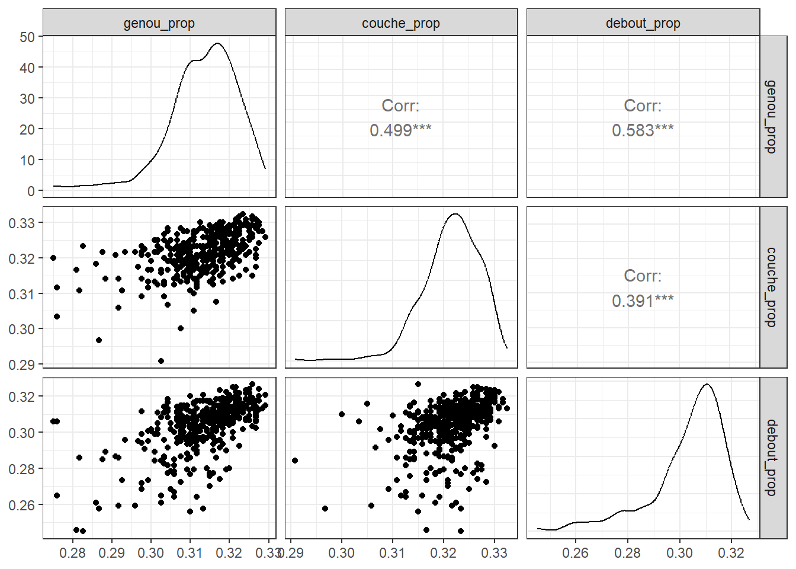
# Lien entre les rangs de qualification et la performance avec la dispersion
num <- 1:nrow(trois_pos_prop_all)
ggplot(trois_pos_prop_all,aes(x = Rank_qualif)) + geom_point(aes(y = disp_std),size=2,colour="blue") + theme_bw()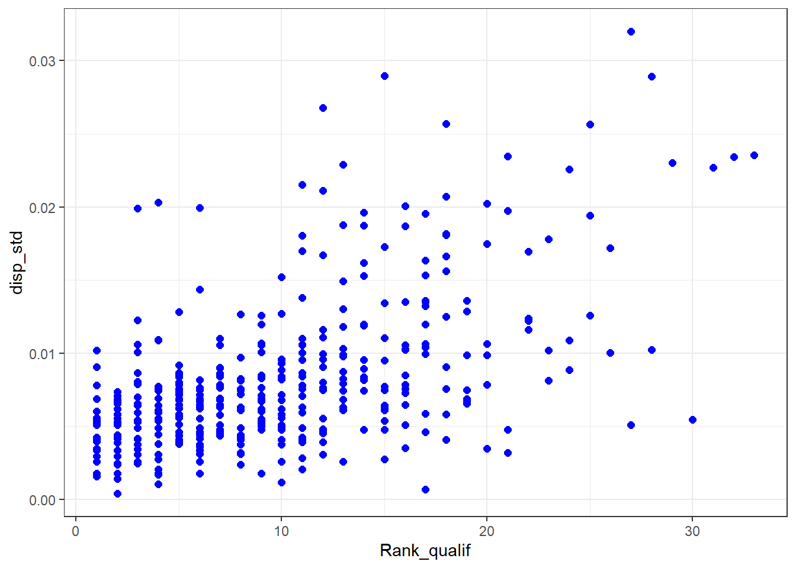
ggplot(trois_pos_prop_all,aes(x = performance)) + geom_point(aes(y = disp_std),size=2,colour="blue") + theme_bw()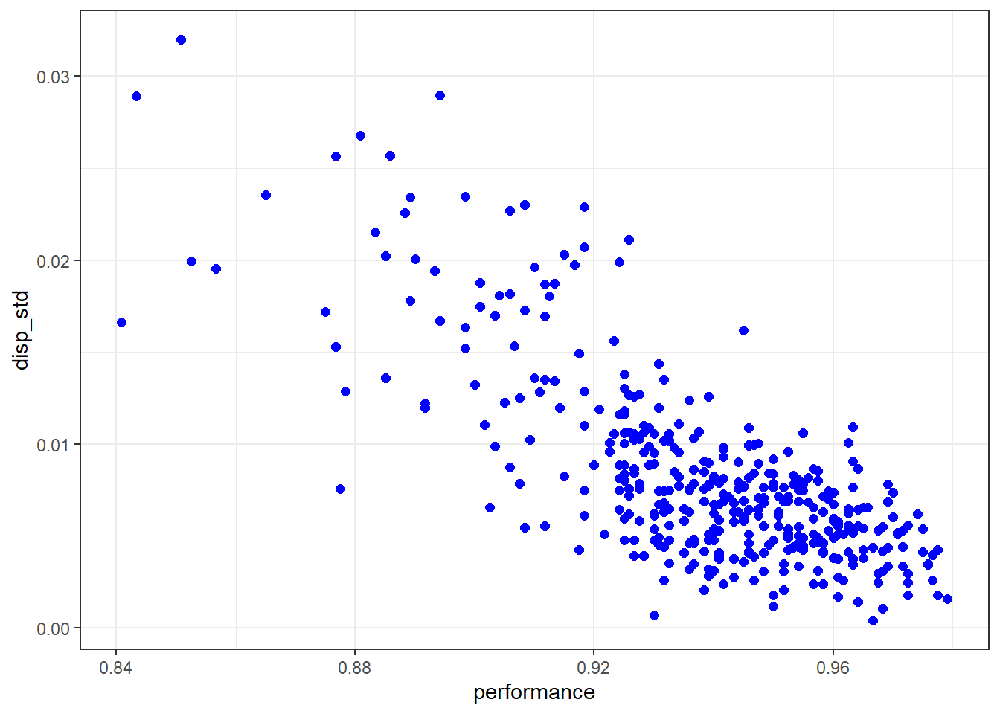
# fusion des tables des données avec les nouvelles variables + création de la variable Rank_global qui vaut 1 si le par-athlète a été qualifié en finale, sinon elle vaut 2
tir_para_R7_qualif_finale <- full_join(trois_pos_prop_all,tir_para_R7_finale,by=c('Annee','Lieu','Competition','Ident'))
tir_para_R7_qualif_finale$Rank_global <- (tir_para_R7_qualif_finale$Rank_qualif > 8)*1+1
# Sélection de certaines variables utiles
tir_para_R7_qualif_finale <- tir_para_R7_qualif_finale %>% select(Annee,Lieu,Competition,Ident,genou,couche,debout,Total.x,Rank.x,Total.y,Rank.y,genou_prop,couche_prop,debout_prop,disp_std,performance,Rank_qualif,Indic_CV,performance,Rank_qualif,Indic_CV,Rank_finale,Rank_global)Cette étape met en forme les scores par position selon que les athlètes ont atteint ou non la finale, puis les compare graphiquement.
## Table sur les scores ##
res_finale <- tir_para_R7_qualif_finale %>% filter(Rank_global == 1)
acces <- matrix("Finalistes",nrow=nrow(res_finale))
position <- matrix("Couché",nrow=nrow(res_finale))
score <- res_finale$couche
result_all <- data.frame(acces,position,score)
position <- matrix("Genou",nrow=nrow(res_finale))
score <- res_finale$genou
result <- data.frame(acces,position,score)
result_all <- rbind(result_all,result)
position <- matrix("Debout",nrow=nrow(res_finale))
score <- res_finale$debout
result <- data.frame(acces,position,score)
result_all <- rbind(result_all,result)
res_finale <- tir_para_R7_qualif_finale %>% filter(Rank_global == 2)
acces <- matrix("Non finalistes",nrow=nrow(res_finale))
position <- matrix("Couché",nrow=nrow(res_finale))
score <- res_finale$couche
result <- data.frame(acces,position,score)
result_all <- rbind(result_all,result)
position <- matrix("Genou",nrow=nrow(res_finale))
score <- res_finale$genou
result <- data.frame(acces,position,score)
result_all <- rbind(result_all,result)
position <- matrix("Debout",nrow=nrow(res_finale))
score <- res_finale$debout
result <- data.frame(acces,position,score)
result_all <- rbind(result_all,result)
result_all_score <- result_all
# Boxplot des scores des trois positions et de l'accès à la finale
ggplot(result_all_score, aes(x=score, y=position, fill=acces)) + geom_boxplot() + coord_flip() + theme_bw()ggplot(result_all_score, aes(x=score, y=acces, fill=position)) + geom_boxplot() + coord_flip() + theme_bw()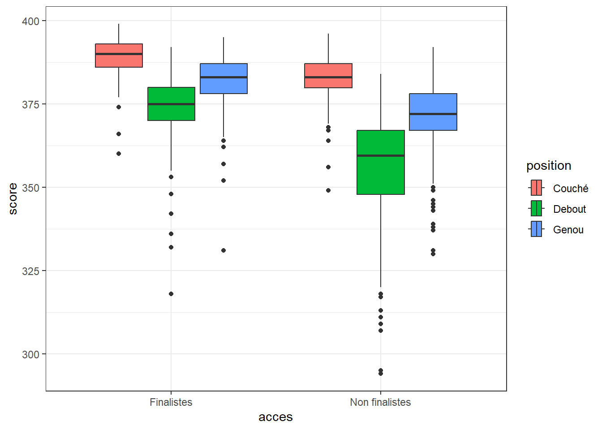
On reprend la même démarche en considérant cette fois les proportions de points obtenues dans chacune des trois positions.
## Table sur les proportions ##
res_finale <- tir_para_R7_qualif_finale %>% filter(Rank_global == 1)
acces <- matrix("Finalistes",nrow=nrow(res_finale))
position <- matrix("Couché",nrow=nrow(res_finale))
proportion <- res_finale$couche_prop
result_all <- data.frame(acces,position,proportion)
position <- matrix("Genou",nrow=nrow(res_finale))
proportion <- res_finale$genou_prop
result <- data.frame(acces,position,proportion)
result_all <- rbind(result_all,result)
position <- matrix("Debout",nrow=nrow(res_finale))
proportion <- res_finale$debout_prop
result <- data.frame(acces,position,proportion)
result_all <- rbind(result_all,result)
res_finale <- tir_para_R7_qualif_finale %>% filter(Rank_global == 2)
acces <- matrix("Non finalistes",nrow=nrow(res_finale))
position <- matrix("Couché",nrow=nrow(res_finale))
proportion <- res_finale$couche_prop
result <- data.frame(acces,position,proportion)
result_all <- rbind(result_all,result)
position <- matrix("Genou",nrow=nrow(res_finale))
proportion <- res_finale$genou_prop
result <- data.frame(acces,position,proportion)
result_all <- rbind(result_all,result)
position <- matrix("Debout",nrow=nrow(res_finale))
proportion <- res_finale$debout_prop
result <- data.frame(acces,position,proportion)
result_all <- rbind(result_all,result)
result_all_prop <- result_all
# Boxplot des proportions des trois positions et de l'accès à la finale
ggplot(result_all_prop, aes(x=proportion, y=position, fill=acces)) + geom_boxplot() + coord_flip() + theme_bw()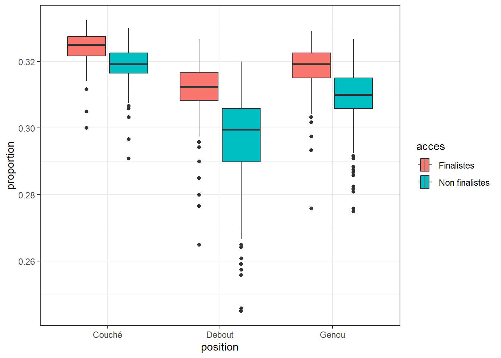
ggplot(result_all_prop, aes(x=proportion, y=acces, fill=position)) + geom_boxplot() + coord_flip() + theme_bw()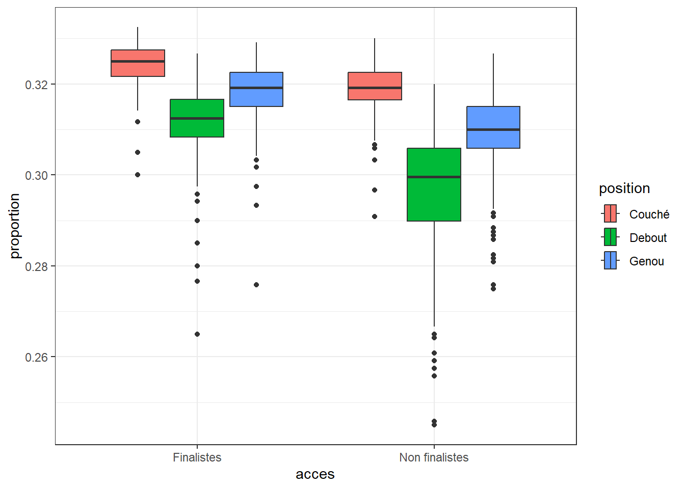
Les performances dans chaque position sont transformées en rangs au sein de chaque compétition. Ces rangs peuvent ensuite être comparés au classement de qualification.
###########################################################################
## Construction des rangs de chacune des trois positions par compétition ##
###########################################################################
tir_para_R7_qualif_finale_bis <- tir_para_R7_qualif_finale
Annee_Lieu <- str_c(tir_para_R7_qualif_finale$Annee,'_',tir_para_R7_qualif_finale$Lieu)
tir_para_R7_qualif_finale$Annee_Lieu <- Annee_Lieu
unique_Annee_Lieu <- unique(tir_para_R7_qualif_finale$Annee_Lieu)
Annee_Lieu_k <- unique_Annee_Lieu[1]
filter_file <- tir_para_R7_qualif_finale %>% filter(Annee_Lieu == Annee_Lieu_k)
rang_debout <- rank(-filter_file$debout_prop,ties.method=c("first"))
rang_genou <- rank(-filter_file$genou_prop,ties.method=c("first"))
rang_couche <- rank(-filter_file$couche_prop,ties.method=c("first"))
Rank_finale_num <- rank(-filter_file$Total.y,ties.method=c("first"))
rang_3_pos_finale <- data.frame(rang_genou,rang_couche,rang_debout,Rank_finale_num)
for (k in 2:nrow(as.matrix(unique_Annee_Lieu)))
{Annee_Lieu_k <- unique_Annee_Lieu[k]
filter_file <- tir_para_R7_qualif_finale %>% filter(Annee_Lieu == Annee_Lieu_k)
rang_debout <- rank(-filter_file$debout_prop,ties.method=c("first"))
rang_genou <- rank(-filter_file$genou_prop,ties.method=c("first"))
rang_couche <- rank(-filter_file$couche_prop,ties.method=c("first"))
Rank_finale_num <- rank(-filter_file$Total.y,ties.method=c("first"))
rang_3_pos_finale <- rbind(rang_3_pos_finale,data.frame(rang_genou,rang_couche,rang_debout,Rank_finale_num))
}
tir_para_R7_qualif_finale <- data.frame(tir_para_R7_qualif_finale,rang_3_pos_finale)
for (i in 1:nrow(tir_para_R7_qualif_finale))
{if (tir_para_R7_qualif_finale$Rank_global[i] == 2) {tir_para_R7_qualif_finale$Rank_finale_num[i] <- NA}
}
ggpairs(tir_para_R7_qualif_finale[,c('rang_genou','rang_couche','rang_debout','Rank_qualif')]) + theme_bw()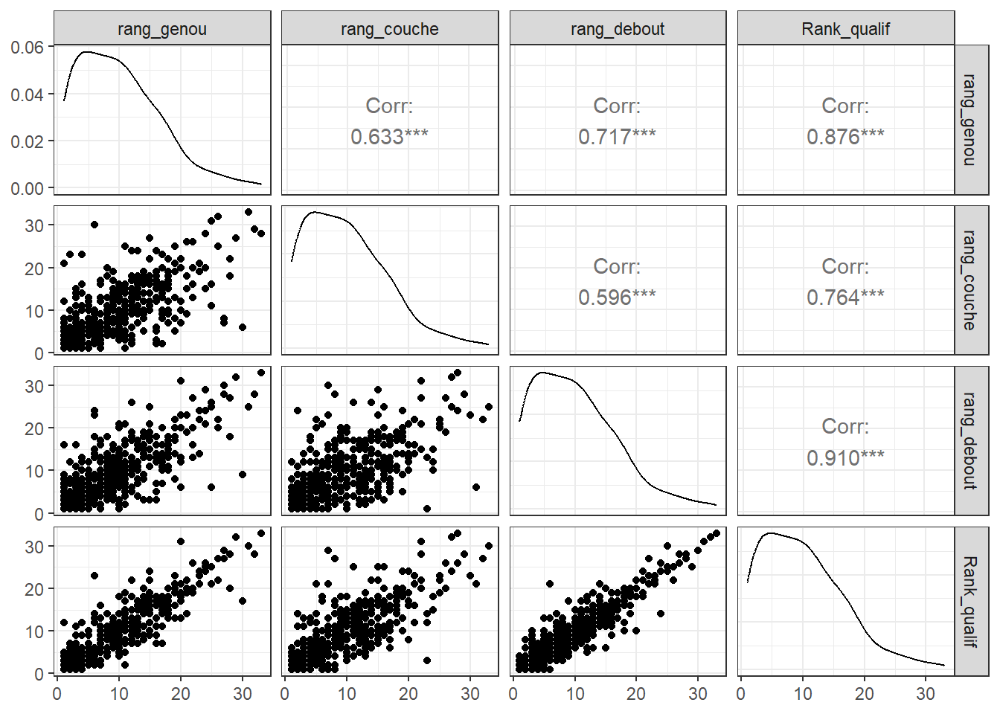
On étudie les liens entre le rang obtenu en qualification et les rangs associés aux trois positions, avec plusieurs coefficients de corrélation.
#############################################################################################################################################################################
## Scatter-plots entre les rangs de la phase de qualification et les trois rangs des trois positions par rapport au maximum de 1200 points sur l'ensemble des compétitions ##
#############################################################################################################################################################################
test_couche_pearson <- cor.test(tir_para_R7_qualif_finale$rang_couche,tir_para_R7_qualif_finale$Rank_qualif,method = c("pearson"))
variable <- c('rang_couche')
method <- c('Pearson')
rho <- round(test_couche_pearson$estimate,3)
ddl <- test_couche_pearson$parameter
p_value <- test_couche_pearson$p.value
vtest <- round(qnorm(p_value),2)
result_test_all <- data.frame(variable,method,rho,ddl,p_value,vtest)
test_couche_kendall <- cor.test(tir_para_R7_qualif_finale$rang_couche,tir_para_R7_qualif_finale$Rank_qualif,method = c("kendall"))
variable <- c('rang_couche')
method <- c('Kendall')
rho <- round(test_couche_kendall$estimate,3)
ddl <- NA
p_value <- test_couche_kendall$p.value
vtest <- round(qnorm(p_value),2)
result_test <- data.frame(variable,method,rho,ddl,p_value,vtest)
result_test_all <- rbind(result_test_all,result_test)
test_couche_spearman <- cor.test(tir_para_R7_qualif_finale$rang_couche,tir_para_R7_qualif_finale$Rank_qualif,method = c("spearman"))
variable <- c('rang_couche')
method <- c('Spearman')
rho <- round(test_couche_spearman$estimate,3)
ddl <- NA
p_value <- test_couche_spearman$p.value
vtest <- round(qnorm(p_value),2)
result_test <- data.frame(variable,method,rho,ddl,p_value,vtest)
result_test_all <- rbind(result_test_all,result_test)
test_genou_pearson <- cor.test(tir_para_R7_qualif_finale$rang_genou,tir_para_R7_qualif_finale$Rank_qualif,method = c("pearson"))
variable <- c('rang_genou')
method <- c('Pearson')
rho <- round(test_genou_pearson$estimate,3)
ddl <- test_genou_pearson$parameter
p_value <- test_genou_pearson$p.value
vtest <- round(qnorm(p_value),2)
result_test <- data.frame(variable,method,rho,ddl,p_value,vtest)
result_test_all <- rbind(result_test_all,result_test)
test_genou_kendall <- cor.test(tir_para_R7_qualif_finale$rang_genou,tir_para_R7_qualif_finale$Rank_qualif,method = c("kendall"))
variable <- c('rang_genou')
method <- c('Kendall')
rho <- round(test_genou_kendall$estimate,3)
ddl <- NA
p_value <- test_genou_kendall$p.value
vtest <- round(qnorm(p_value),2)
result_test <- data.frame(variable,method,rho,ddl,p_value,vtest)
result_test_all <- rbind(result_test_all,result_test)
test_genou_spearman <- cor.test(tir_para_R7_qualif_finale$rang_genou,tir_para_R7_qualif_finale$Rank_qualif,method = c("spearman"))
variable <- c('rang_genou')
method <- c('Spearman')
rho <- round(test_genou_spearman$estimate,3)
ddl <- NA
p_value <- test_genou_spearman$p.value
vtest <- round(qnorm(p_value),2)
result_test <- data.frame(variable,method,rho,ddl,p_value,vtest)
result_test_all <- rbind(result_test_all,result_test)
test_debout_pearson <- cor.test(tir_para_R7_qualif_finale$rang_debout,tir_para_R7_qualif_finale$Rank_qualif,method = c("pearson"))
variable <- c('rang_debout')
method <- c('Pearson')
rho <- round(test_debout_pearson$estimate,3)
ddl <- test_debout_pearson$parameter
p_value <- test_debout_pearson$p.value
vtest <- round(qnorm(p_value),2)
result_test <- data.frame(variable,method,rho,ddl,p_value,vtest)
result_test_all <- rbind(result_test_all,result_test)
test_debout_kendall <- cor.test(tir_para_R7_qualif_finale$rang_debout,tir_para_R7_qualif_finale$Rank_qualif,method = c("kendall"))
variable <- c('rang_debout')
method <- c('Kendall')
rho <- round(test_debout_kendall$estimate,3)
ddl <- NA
p_value <- test_debout_kendall$p.value
vtest <- round(qnorm(p_value),2)
result_test <- data.frame(variable,method,rho,ddl,p_value,vtest)
result_test_all <- rbind(result_test_all,result_test)
test_debout_spearman <- cor.test(tir_para_R7_qualif_finale$rang_debout,tir_para_R7_qualif_finale$Rank_qualif,method = c("spearman"))
variable <- c('rang_debout')
method <- c('Spearman')
rho <- round(test_debout_spearman$estimate,3)
ddl <- NA
p_value <- test_debout_spearman$p.value
vtest <- round(qnorm(p_value),2)
result_test <- data.frame(variable,method,rho,ddl,p_value,vtest)
result_test_all <- rbind(result_test_all,result_test)# scatLes proportions obtenues dans les trois positions sont mises en regard de l’accès à la finale, puis explorées à l’aide de graphiques et d’une caractérisation descriptive.
################################################################################
# Scatter-plots entre les proportions des trois positions et l'accès en finale #
################################################################################
res_qualif <- matrix(0,nrow=nrow(tir_para_R7_qualif_finale))
for (i in 1:nrow(tir_para_R7_qualif_finale))
{if (tir_para_R7_qualif_finale$Rank_global[i] == 1) {res_qualif[i] <- c('Finale')}
if (tir_para_R7_qualif_finale$Rank_global[i] == 2) {res_qualif[i] <- c('Pas finale')}
}
tir_para_R7_qualif_finale$res_qualif_ter <- as.factor(res_qualif)
ggpairs(tir_para_R7_qualif_finale[,c('couche_prop','genou_prop','debout_prop','res_qualif_ter')]) + theme_bw()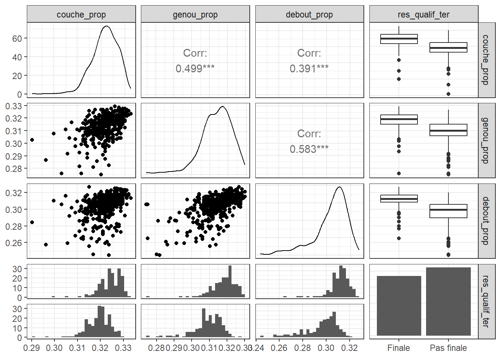
#####################################################################################
# Caractérisation de l'accès en finale à l'aide des proportions des trois positions #
#####################################################################################
file_train <- tir_para_R7_qualif_finale %>%select(res_qualif_ter,genou_prop,couche_prop,debout_prop)
cat_finale <- catdes(file_train,num.var=1,prob=0.15)See the Viewer window
$res_quanti.var
See the Viewer window
$res_allplot(cat_finale,barplot=TRUE)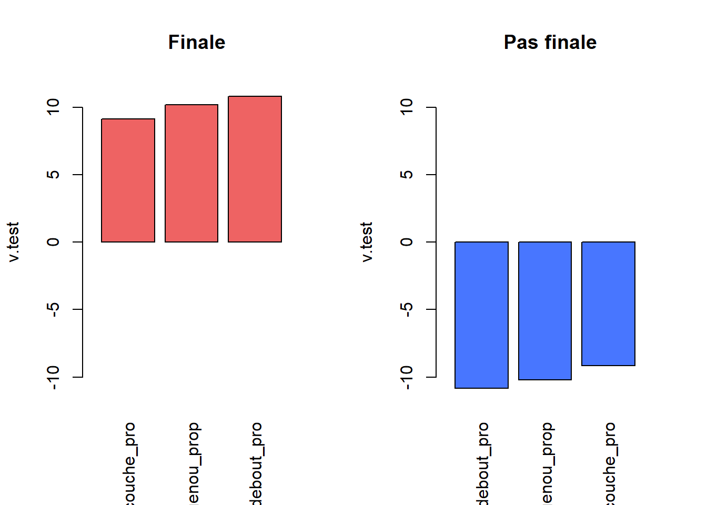
See the Plots window and the Viewer window$res_all
$res_quanti.varOn examine si les indicateurs de performance et de reproductibilité diffèrent entre les athlètes finalistes et non finalistes.
################################################################################################################################
# Liens entre les indicateurs de performance, reproductibilité (dispersion) et coefficient de variation avec l'accès en finale #
################################################################################################################################
num <- 1:nrow(tir_para_R7_qualif_finale)
ggplot(tir_para_R7_qualif_finale, aes(x=performance, fill=res_qualif_ter)) + geom_boxplot() + coord_flip() + theme_bw()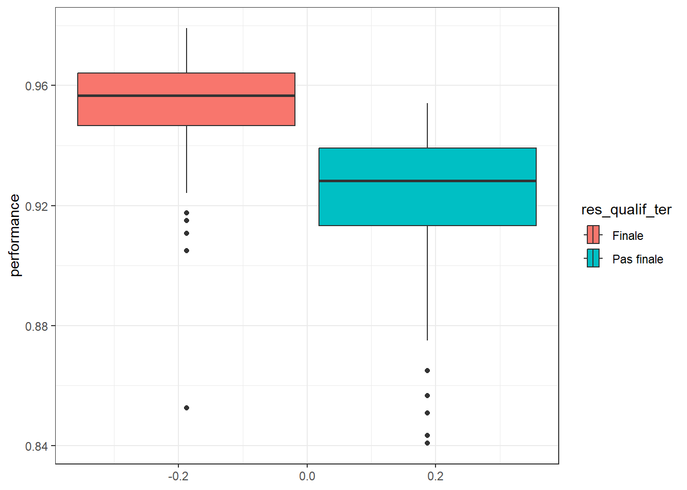
ggplot(tir_para_R7_qualif_finale, aes(x=disp_std, fill=res_qualif_ter)) + geom_boxplot() + coord_flip() + theme_bw()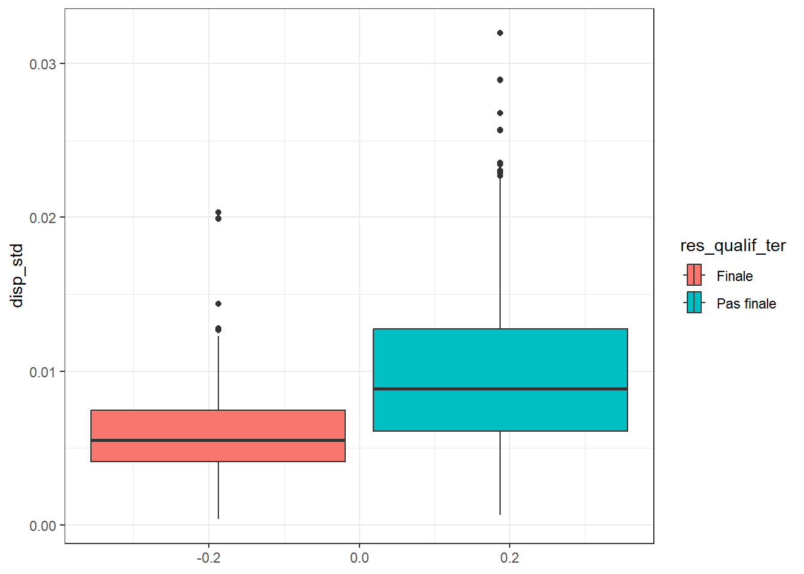
par(oma=c(0,0,0,0),bg="white")
plot(tir_para_R7_qualif_finale$performance,tir_para_R7_qualif_finale$disp_std,type="n", main="Performance vs reproductibilité",xlab="Performance",ylab="Reproductibilité")
text(tir_para_R7_qualif_finale$performance,tir_para_R7_qualif_finale$disp_std,num,col=c("green","red")[tir_para_R7_qualif_finale$Rank_global],cex=1)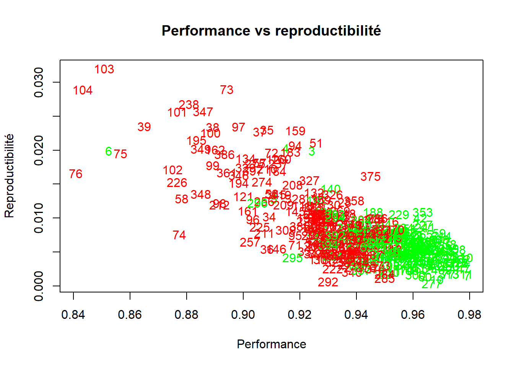
ggplot(tir_para_R7_qualif_finale, aes(x=Indic_CV, fill=res_qualif_ter)) + geom_boxplot() + coord_flip() + theme_bw()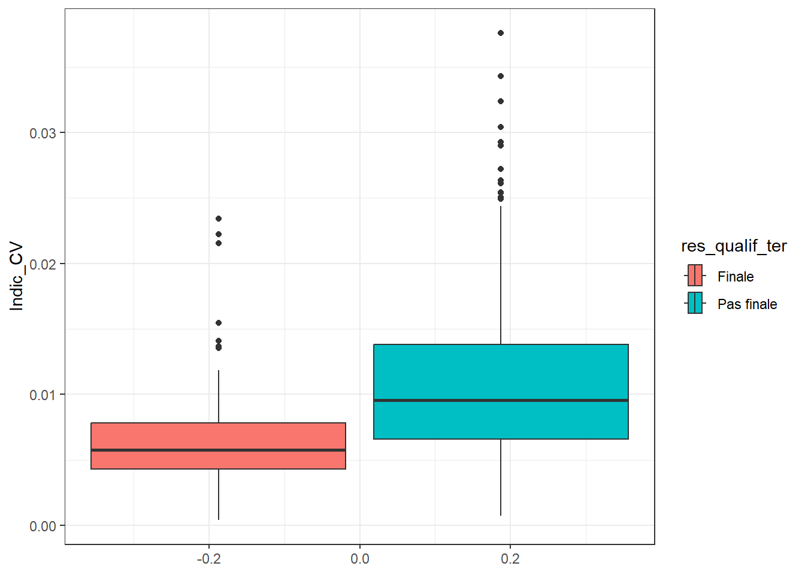
par(oma=c(0,0,0,0),bg="white")
plot(num,tir_para_R7_qualif_finale$Indic_CV,type="n", main="Coefficient de variation et accès en finale",xlab="Performance",ylab="Reproductibilité")
text(num,tir_para_R7_qualif_finale$Indic_CV,num,col=c("green","red")[tir_para_R7_qualif_finale$Rank_global],cex=1)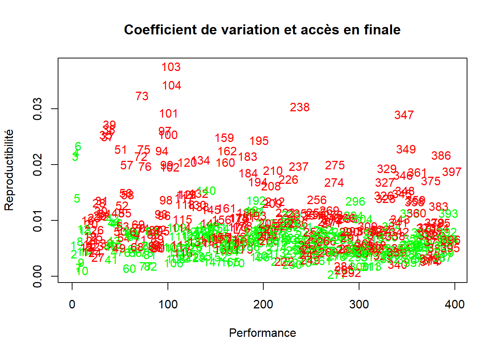
Une classification ascendante hiérarchique est réalisée à partir des proportions des trois positions. Les groupes obtenus sont ensuite représentés et décrits.
########################################
## Classification sur les proportions ##
########################################
# Représentation en 3D des trois positions
scatter3D(tir_para_R7_qualif_finale$debout_prop, tir_para_R7_qualif_finale$genou_prop, tir_para_R7_qualif_finale$couche_prop, xlab = "Proportion debout", ylab = "Proportion genou", zlab = "Proportion couchée",col=c("blue"),pch = ".", bty = "f", cex = 5, colkey = FALSE)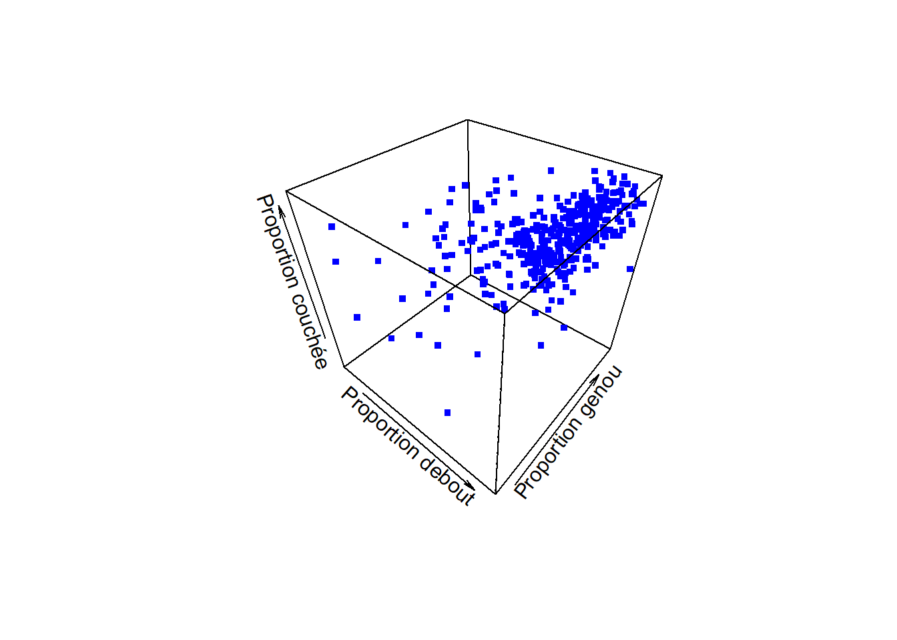
# Représentation en 3D des trois positions et de la target (Finale vs Non finale)
scatter3D(tir_para_R7_qualif_finale$debout_prop, tir_para_R7_qualif_finale$genou_prop,tir_para_R7_qualif_finale$couche_prop, type="n",pch = ".", bty = "f", cex = 5, colkey = FALSE)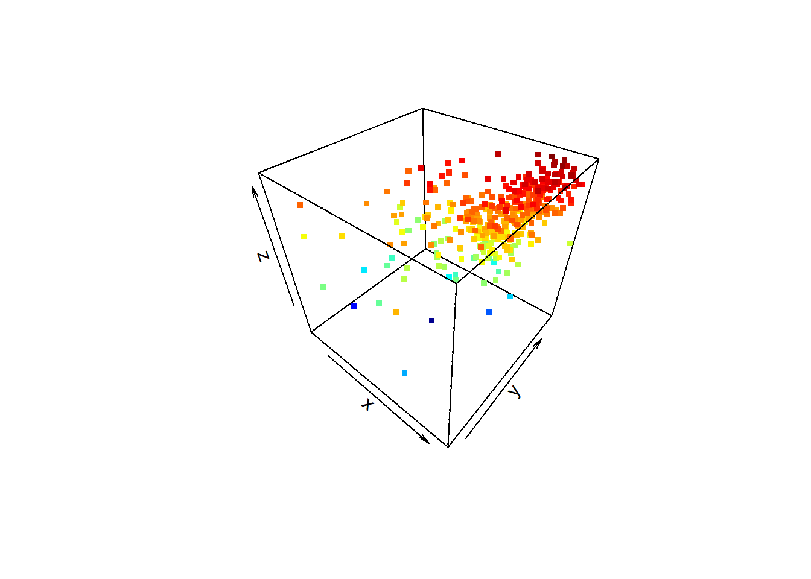
text3D(tir_para_R7_qualif_finale$debout_prop, tir_para_R7_qualif_finale$genou_prop,tir_para_R7_qualif_finale$couche_prop, xlab = "Proportion debout", ylab = "Proportion genou", zlab = "Proportion couchée",col=c("green","red")[tir_para_R7_qualif_finale$Rank_global],cex=1,labels=rownames(tir_para_R7_qualif_finale))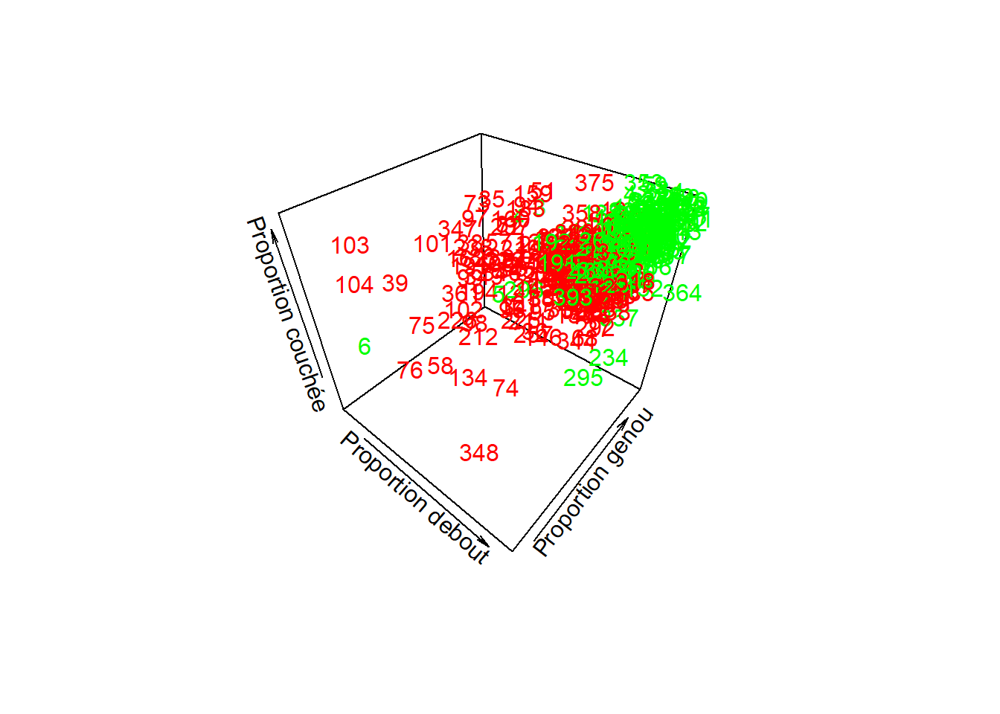
# Matrice de distances euclidiennes sur les trois positions
d.prop <- dist(tir_para_R7_qualif_finale[,12:14])
# Matrice de distances euclidiennes sur les trois positions et disp_std
d.prop <- dist(tir_para_R7_qualif_finale[,12:15])
# CAH avec le critère de Ward
cah.ward <- hclust(d.prop,method="ward.D2")
cah.ward$height <- cah.ward$height^2/2
# Dendrogramme
plot(cah.ward)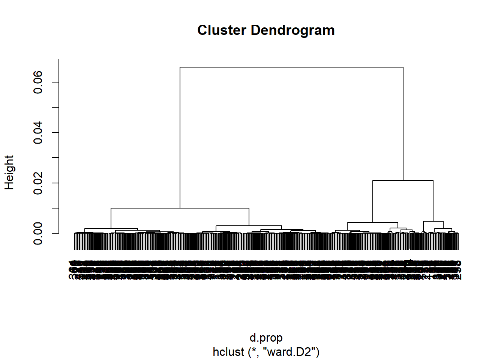
# Affichage de la décroissance de perte d'inertie inter-classes
n <- 397
cah.ward$height <- cah.ward$height/n
SMR2_Cm <- cah.ward$height/(sum(d.prop^2)/((n-1)^2))
som_SMR2_Cm=0
R2_Cm <- matrix(0,nrow=99)
for (i in 1:396)
{som_SMR2_Cm=som_SMR2_Cm+SMR2_Cm[i]
R2_Cm[i]=round((1-som_SMR2_Cm)*100,4)
}
SMR2_Cm <- SMR2_Cm*100
res_ward <- data.frame(cah.ward$height,SMR2_Cm,R2_Cm)
etape <- 1:396
nb_cls <- 397:2
process <- data.frame(etape,nb_cls,res_ward)
par(oma=c(0,0,0,0)+1,bg="white")
plot (process$etape, process$SMR2_Cm, type = "n", xlab="Etapes",ylab="Proportion de variation Ward",main="")
text (process$etape, process$SMR2_Cm, process$nb_cls,col='red',cex=1)
#dendrogramme avec matérialisation en quatre groupes pour les trois positions seulement
rect.hclust(cah.ward,k=4)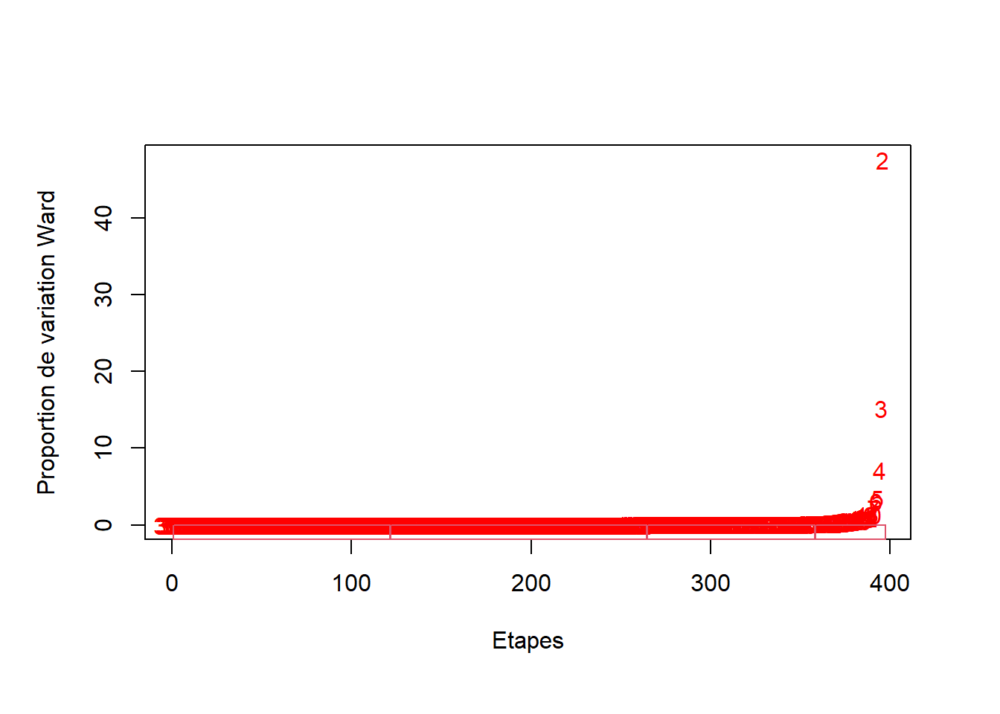
#découpage en 4 groupes avec les proportions des 3 positions seulement
groupes.cah_ward <- cutree(cah.ward,k=4)
# Fusion du tableau de données et de la variable de classe
tir_para_R7_qualif_finale <- data.frame(tir_para_R7_qualif_finale,groupes.cah_ward)
# Représentation en 3D des trois positions et des classes
scatter3D(tir_para_R7_qualif_finale$debout_prop, tir_para_R7_qualif_finale$genou_prop,tir_para_R7_qualif_finale$couche_prop, type="n",pch = ".", bty = "f", cex = 5, colkey = FALSE)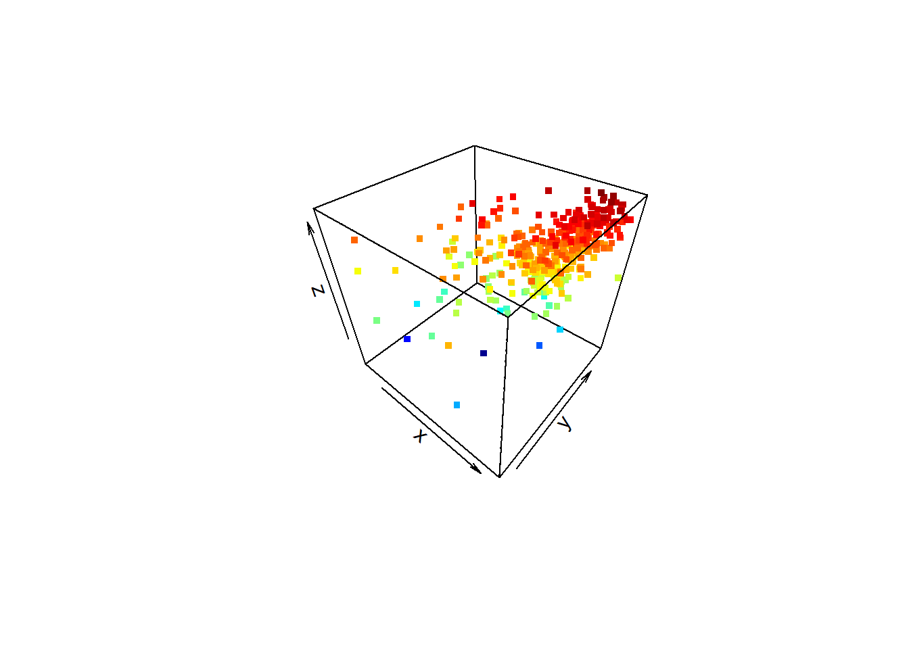
text3D(tir_para_R7_qualif_finale$debout_prop, tir_para_R7_qualif_finale$genou_prop,tir_para_R7_qualif_finale$couche_prop, xlab = "Proportion debout", ylab = "Proportion genou", zlab = "Proportion couchée",col=c("green","red","blue","cyan")[tir_para_R7_qualif_finale$groupes.cah_ward],cex=1,labels=rownames(tir_para_R7_qualif_finale))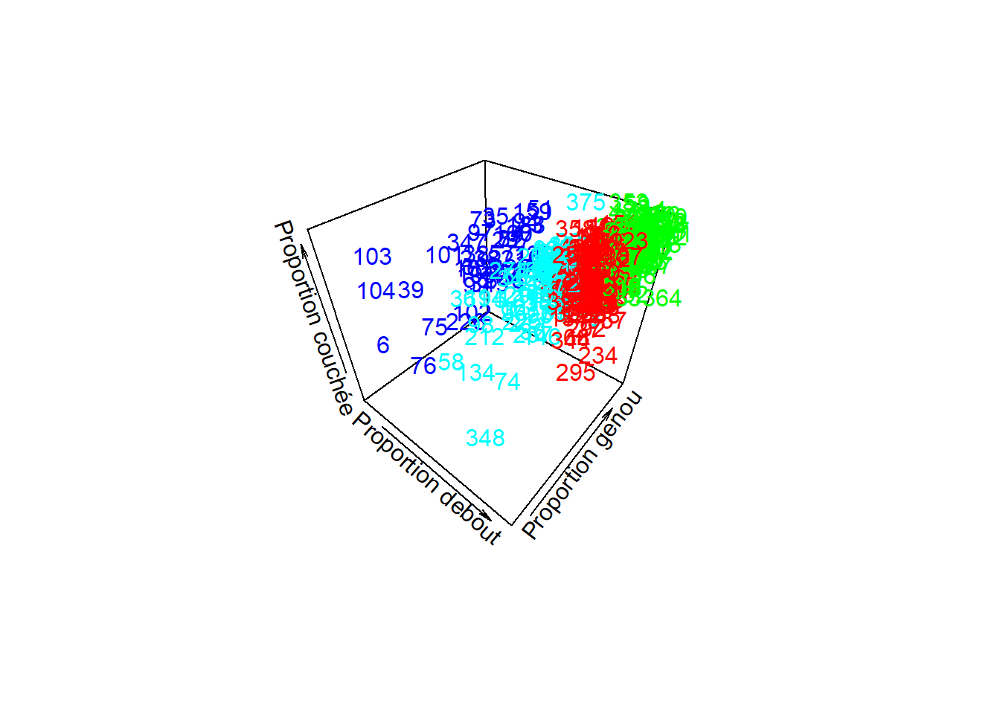
# Transformation de la variable de classe en type caractère pour pouvoir utiliser la fonction catdes
tir_para_R7_qualif_finale$cluster <- as.character(tir_para_R7_qualif_finale$groupes.cah_ward)
table(tir_para_R7_qualif_finale$cluster)
1 2 3 4
121 143 39 94 # Construction de la table de données pour afficher les box-plots des classes pour les trois positions seulement
res_finale <- tir_para_R7_qualif_finale %>% filter(cluster == "1")
classe <- matrix("Classe 1",nrow=nrow(res_finale))
position <- matrix("Couché",nrow=nrow(res_finale))
proportion <- res_finale$couche_prop
result_all <- data.frame(classe,position,proportion)
position <- matrix("Genou",nrow=nrow(res_finale))
proportion <- res_finale$genou_prop
result <- data.frame(classe,position,proportion)
result_all <- rbind(result_all,result)
position <- matrix("Debout",nrow=nrow(res_finale))
proportion <- res_finale$debout_prop
result <- data.frame(classe,position,proportion)
result_all <- rbind(result_all,result)
res_finale <- tir_para_R7_qualif_finale %>% filter(cluster == "2")
classe <- matrix("Classe 2",nrow=nrow(res_finale))
position <- matrix("Couché",nrow=nrow(res_finale))
proportion <- res_finale$couche_prop
result <- data.frame(classe,position,proportion)
result_all <- rbind(result_all,result)
position <- matrix("Genou",nrow=nrow(res_finale))
proportion <- res_finale$genou_prop
result <- data.frame(classe,position,proportion)
result_all <- rbind(result_all,result)
position <- matrix("Debout",nrow=nrow(res_finale))
proportion <- res_finale$debout_prop
result <- data.frame(classe,position,proportion)
result_all <- rbind(result_all,result)
res_finale <- tir_para_R7_qualif_finale %>% filter(cluster == "3")
classe <- matrix("Classe 3",nrow=nrow(res_finale))
position <- matrix("Couché",nrow=nrow(res_finale))
proportion <- res_finale$couche_prop
result <- data.frame(classe,position,proportion)
result_all <- rbind(result_all,result)
position <- matrix("Genou",nrow=nrow(res_finale))
proportion <- res_finale$genou_prop
result <- data.frame(classe,position,proportion)
result_all <- rbind(result_all,result)
position <- matrix("Debout",nrow=nrow(res_finale))
proportion <- res_finale$debout_prop
result <- data.frame(classe,position,proportion)
result_all <- rbind(result_all,result)
res_finale <- tir_para_R7_qualif_finale %>% filter(cluster == "4")
classe <- matrix("Classe 4",nrow=nrow(res_finale))
position <- matrix("Couché",nrow=nrow(res_finale))
proportion <- res_finale$couche_prop
result <- data.frame(classe,position,proportion)
result_all <- rbind(result_all,result)
position <- matrix("Genou",nrow=nrow(res_finale))
proportion <- res_finale$genou_prop
result <- data.frame(classe,position,proportion)
result_all <- rbind(result_all,result)
position <- matrix("Debout",nrow=nrow(res_finale))
proportion <- res_finale$debout_prop
result <- data.frame(classe,position,proportion)
result_all <- rbind(result_all,result)
ggplot(result_all, aes(x=proportion, y=classe, fill=position)) + geom_boxplot() + coord_flip()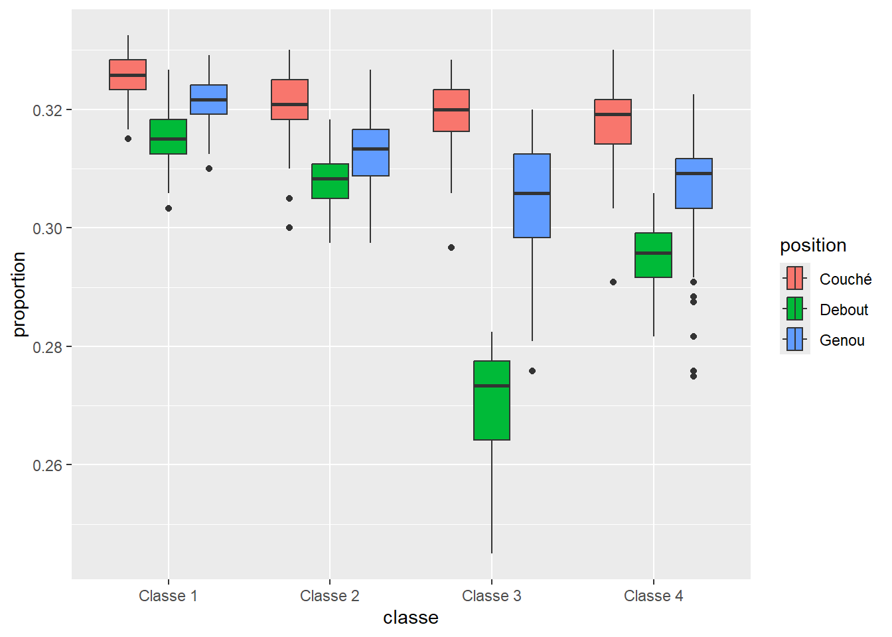
# Caractérisation des classes à l'aide du concept de la valeur-test #
file_train <- tir_para_R7_qualif_finale %>% select(cluster,res_qualif_ter,genou_prop,couche_prop,debout_prop,disp_std,Rank_qualif)
cat_finale <- catdes(file_train,num.var=1)See the Viewer window
$res_test_chi2
See the Viewer window
$res_quanti.var
See the Viewer window
$res_allplot(cat_finale,barplot=TRUE)
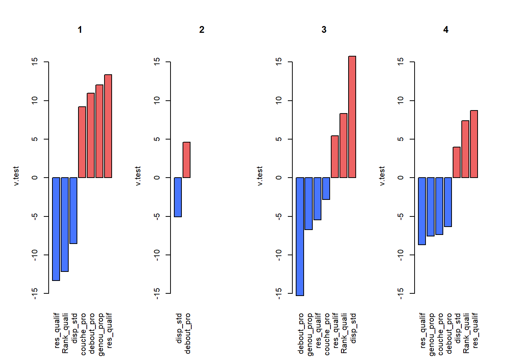
See the Plots window and the Viewer window$res_all
$res_quanti.var
$res_test_chi2# Construction de la table de données pour afficher les box-plots des classes pour les trois positions de la reproductibilité (disp_std)
res_finale <- tir_para_R7_qualif_finale %>% filter(cluster == "1")
classe <- matrix("Classe 1",nrow=nrow(res_finale))
position <- matrix("Couché",nrow=nrow(res_finale))
proportion <- res_finale$couche_prop
result_all <- data.frame(classe,position,proportion)
position <- matrix("Genou",nrow=nrow(res_finale))
proportion <- res_finale$genou_prop
result <- data.frame(classe,position,proportion)
result_all <- rbind(result_all,result)
position <- matrix("Debout",nrow=nrow(res_finale))
proportion <- res_finale$debout_prop
result <- data.frame(classe,position,proportion)
result_all <- rbind(result_all,result)
position <- matrix("Reproductibilité",nrow=nrow(res_finale))
proportion <- res_finale$disp_std*sqrt(3)
result <- data.frame(classe,position,proportion)
result_all <- rbind(result_all,result)
res_finale <- tir_para_R7_qualif_finale %>% filter(cluster == "2")
classe <- matrix("Classe 2",nrow=nrow(res_finale))
position <- matrix("Couché",nrow=nrow(res_finale))
proportion <- res_finale$couche_prop
result <- data.frame(classe,position,proportion)
result_all <- rbind(result_all,result)
position <- matrix("Genou",nrow=nrow(res_finale))
proportion <- res_finale$genou_prop
result <- data.frame(classe,position,proportion)
result_all <- rbind(result_all,result)
position <- matrix("Debout",nrow=nrow(res_finale))
proportion <- res_finale$debout_prop
result <- data.frame(classe,position,proportion)
result_all <- rbind(result_all,result)
position <- matrix("Reproductibilité",nrow=nrow(res_finale))
proportion <- res_finale$disp_std*sqrt(3)
result <- data.frame(classe,position,proportion)
result_all <- rbind(result_all,result)
res_finale <- tir_para_R7_qualif_finale %>% filter(cluster == "3")
classe <- matrix("Classe 3",nrow=nrow(res_finale))
position <- matrix("Couché",nrow=nrow(res_finale))
proportion <- res_finale$couche_prop
result <- data.frame(classe,position,proportion)
result_all <- rbind(result_all,result)
position <- matrix("Genou",nrow=nrow(res_finale))
proportion <- res_finale$genou_prop
result <- data.frame(classe,position,proportion)
result_all <- rbind(result_all,result)
position <- matrix("Debout",nrow=nrow(res_finale))
proportion <- res_finale$debout_prop
result <- data.frame(classe,position,proportion)
result_all <- rbind(result_all,result)
position <- matrix("Reproductibilité",nrow=nrow(res_finale))
proportion <- res_finale$disp_std*sqrt(3)
result <- data.frame(classe,position,proportion)
result_all <- rbind(result_all,result)
res_finale <- tir_para_R7_qualif_finale %>% filter(cluster == "4")
classe <- matrix("Classe 4",nrow=nrow(res_finale))
position <- matrix("Couché",nrow=nrow(res_finale))
proportion <- res_finale$couche_prop
result <- data.frame(classe,position,proportion)
result_all <- rbind(result_all,result)
position <- matrix("Genou",nrow=nrow(res_finale))
proportion <- res_finale$genou_prop
result <- data.frame(classe,position,proportion)
result_all <- rbind(result_all,result)
position <- matrix("Debout",nrow=nrow(res_finale))
proportion <- res_finale$debout_prop
result <- data.frame(classe,position,proportion)
result_all <- rbind(result_all,result)
position <- matrix("Reproductibilité",nrow=nrow(res_finale))
proportion <- res_finale$disp_std*sqrt(3)
result <- data.frame(classe,position,proportion)
result_all <- rbind(result_all,result)
ggplot(result_all, aes(x=proportion, y=classe, fill=position)) + geom_boxplot() + coord_flip()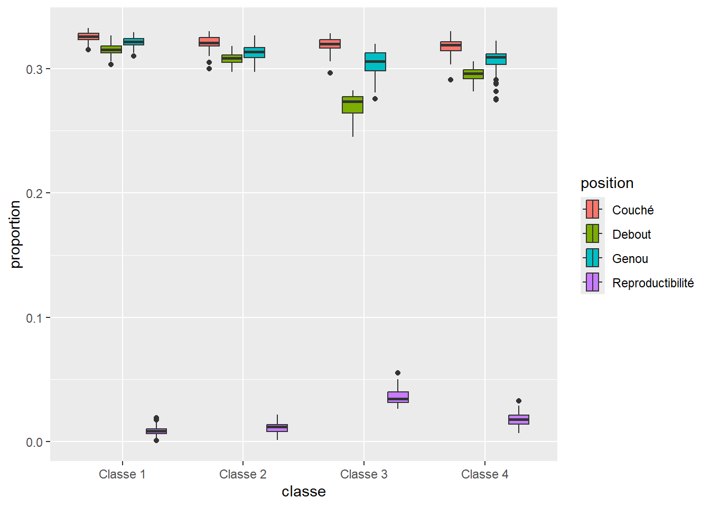
Les scores des trois positions sont comparés deux à deux chez les finalistes, puis chez les non-finalistes. Les tests de normalité des différences précèdent les tests t appariés.
#######################################################################################################
## Test t sur échantillons appariés sur chaque accès pour comparer deux à deux les positions: scores ##
#######################################################################################################
finalistes <- tir_para_R7_qualif_finale %>% filter(Rank_global == 1)
non_finalistes <- tir_para_R7_qualif_finale %>% filter(Rank_global == 2)
# Test de normalité des différences
diff_finalistes_couche_genou <- finalistes$couche-finalistes$genou
num <- 1:185
data_finalistes_couche_genou <- data.frame(num,diff_finalistes_couche_genou)
test_KS_finalistes_couche_genou <- ks.test(data_finalistes_couche_genou[,2],"pnorm")
test_KS_finalistes_couche_genou
Asymptotic one-sample Kolmogorov-Smirnov test
data: data_finalistes_couche_genou[, 2]
D = 0.77184, p-value < 2.2e-16
alternative hypothesis: two-sidedtest_SW_finalistes_couche_genou <- shapiro.test(data_finalistes_couche_genou[,2])
test_SW_finalistes_couche_genou
Shapiro-Wilk normality test
data: data_finalistes_couche_genou[, 2]
W = 0.95921, p-value = 3.398e-05# Test t
test_t_finalistes_couche_genou <- t.test(finalistes$couche, finalistes$genou, paired = TRUE)
test_t_finalistes_couche_genou
Paired t-test
data: finalistes$couche and finalistes$genou
t = 12.436, df = 184, p-value < 2.2e-16
alternative hypothesis: true mean difference is not equal to 0
95 percent confidence interval:
6.176004 8.505077
sample estimates:
mean difference
7.340541 # Test de normalité des différences
diff_finalistes_couche_debout <- finalistes$couche-finalistes$debout
num <- 1:185
data_finalistes_couche_debout <- data.frame(num,diff_finalistes_couche_debout)
test_KS_finalistes_couche_debout <- ks.test(data_finalistes_couche_debout[,2],"pnorm")
test_KS_finalistes_couche_debout
Asymptotic one-sample Kolmogorov-Smirnov test
data: data_finalistes_couche_debout[, 2]
D = 0.95, p-value < 2.2e-16
alternative hypothesis: two-sidedtest_SW_finalistes_couche_debout <- shapiro.test(data_finalistes_couche_debout[,2])
test_SW_finalistes_couche_debout
Shapiro-Wilk normality test
data: data_finalistes_couche_debout[, 2]
W = 0.91959, p-value = 1.522e-08# Test t
test_t_finalistes_couche_debout <- t.test(finalistes$couche, finalistes$debout, paired = TRUE)
test_t_finalistes_couche_debout
Paired t-test
data: finalistes$couche and finalistes$debout
t = 21.472, df = 184, p-value < 2.2e-16
alternative hypothesis: true mean difference is not equal to 0
95 percent confidence interval:
13.69539 16.46678
sample estimates:
mean difference
15.08108 # Test de normalité des différences
diff_finalistes_genou_debout <- finalistes$genou-finalistes$debout
num <- 1:185
data_finalistes_genou_debout <- data.frame(num,diff_finalistes_genou_debout)
test_KS_finalistes_genou_debout <- ks.test(data_finalistes_genou_debout[,2],"pnorm")
test_KS_finalistes_genou_debout
Asymptotic one-sample Kolmogorov-Smirnov test
data: data_finalistes_genou_debout[, 2]
D = 0.73401, p-value < 2.2e-16
alternative hypothesis: two-sidedtest_SW_finalistes_genou_debout <- shapiro.test(data_finalistes_genou_debout[,2])
test_SW_finalistes_genou_debout
Shapiro-Wilk normality test
data: data_finalistes_genou_debout[, 2]
W = 0.958, p-value = 2.558e-05# Test t
test_t_finalistes_genou_debout <- t.test(finalistes$genou, finalistes$debout, paired = TRUE)
test_t_finalistes_genou_debout
Paired t-test
data: finalistes$genou and finalistes$debout
t = 11.407, df = 184, p-value < 2.2e-16
alternative hypothesis: true mean difference is not equal to 0
95 percent confidence interval:
6.401780 9.079301
sample estimates:
mean difference
7.740541 # Test de normalité des différences
diff_non_finalistes_couche_genou <- non_finalistes$couche-non_finalistes$genou
num <- 1:212
data_non_finalistes_couche_genou <- data.frame(num,diff_non_finalistes_couche_genou)
test_KS_non_finalistes_couche_genou <- ks.test(data_non_finalistes_couche_genou[,2],"pnorm")
test_KS_non_finalistes_couche_genou
Asymptotic one-sample Kolmogorov-Smirnov test
data: data_non_finalistes_couche_genou[, 2]
D = 0.86657, p-value < 2.2e-16
alternative hypothesis: two-sidedtest_SW_non_finalistes_couche_genou <- shapiro.test(data_non_finalistes_couche_genou[,2])
test_SW_non_finalistes_couche_genou
Shapiro-Wilk normality test
data: data_non_finalistes_couche_genou[, 2]
W = 0.95952, p-value = 9.915e-06# Test t
test_t_non_finalistes_couche_genou <- t.test(non_finalistes$couche, non_finalistes$genou, paired = TRUE)
test_t_non_finalistes_couche_genou
Paired t-test
data: non_finalistes$couche and non_finalistes$genou
t = 17.64, df = 211, p-value < 2.2e-16
alternative hypothesis: true mean difference is not equal to 0
95 percent confidence interval:
10.90198 13.64519
sample estimates:
mean difference
12.27358 # Test de normalité des différences
diff_non_finalistes_couche_debout <- non_finalistes$couche-non_finalistes$debout
num <- 1:212
data_non_finalistes_couche_debout <- data.frame(num,diff_non_finalistes_couche_debout)
test_KS_non_finalistes_couche_debout <- ks.test(data_non_finalistes_couche_debout[,2],"pnorm")
test_KS_non_finalistes_couche_debout
Asymptotic one-sample Kolmogorov-Smirnov test
data: data_non_finalistes_couche_debout[, 2]
D = 0.96563, p-value < 2.2e-16
alternative hypothesis: two-sidedtest_SW_non_finalistes_couche_debout <- shapiro.test(data_non_finalistes_couche_debout[,2])
test_SW_non_finalistes_couche_debout
Shapiro-Wilk normality test
data: data_non_finalistes_couche_debout[, 2]
W = 0.93092, p-value = 1.898e-08# Test t
test_t_non_finalistes_couche_debout <- t.test(non_finalistes$couche, non_finalistes$debout, paired = TRUE)
test_t_non_finalistes_couche_debout
Paired t-test
data: non_finalistes$couche and non_finalistes$debout
t = 22.518, df = 211, p-value < 2.2e-16
alternative hypothesis: true mean difference is not equal to 0
95 percent confidence interval:
25.21308 30.05108
sample estimates:
mean difference
27.63208 # Test de normalité des différences
diff_non_finalistes_genou_debout <- non_finalistes$genou-non_finalistes$debout
num <- 1:212
data_non_finalistes_genou_debout <- data.frame(num,diff_non_finalistes_genou_debout)
test_KS_non_finalistes_genou_debout <- ks.test(data_non_finalistes_genou_debout[,2],"pnorm")
test_KS_non_finalistes_genou_debout
Asymptotic one-sample Kolmogorov-Smirnov test
data: data_non_finalistes_genou_debout[, 2]
D = 0.81687, p-value < 2.2e-16
alternative hypothesis: two-sidedtest_SW_non_finalistes_genou_debout <- shapiro.test(data_non_finalistes_genou_debout[,2])
test_SW_non_finalistes_genou_debout
Shapiro-Wilk normality test
data: data_non_finalistes_genou_debout[, 2]
W = 0.9753, p-value = 0.000883# Test t
test_t_non_finalistes_genou_debout <- t.test(non_finalistes$genou, non_finalistes$debout, paired = TRUE)
test_t_non_finalistes_genou_debout
Paired t-test
data: non_finalistes$genou and non_finalistes$debout
t = 13.654, df = 211, p-value < 2.2e-16
alternative hypothesis: true mean difference is not equal to 0
95 percent confidence interval:
13.14107 17.57591
sample estimates:
mean difference
15.35849 On reprend les comparaisons deux à deux avec le test non paramétrique de Wilcoxon pour données appariées.
###############################################################################################################################
## Test de Wilcoxon-Mann-Whitney sur échantillons appariés sur chaque accès pour comparer deux à deux les positions : scores ##
###############################################################################################################################
finalistes <- tir_para_R7_qualif_finale %>% filter(Rank_global == 1)
non_finalistes <- tir_para_R7_qualif_finale %>% filter(Rank_global == 2)
test_wilcoxon_finalistes_couche_genou <- wilcox.test(finalistes$couche, finalistes$genou, paired = TRUE)
test_wilcoxon_finalistes_couche_genou
Wilcoxon signed rank test with continuity correction
data: finalistes$couche and finalistes$genou
V = 14741, p-value < 2.2e-16
alternative hypothesis: true location shift is not equal to 0test_wilcoxon_finalistes_couche_debout <- wilcox.test(finalistes$couche, finalistes$debout, paired = TRUE)
test_wilcoxon_finalistes_couche_debout
Wilcoxon signed rank test with continuity correction
data: finalistes$couche and finalistes$debout
V = 16968, p-value < 2.2e-16
alternative hypothesis: true location shift is not equal to 0test_wilcoxon_finalistes_genou_debout <- wilcox.test(finalistes$genou, finalistes$debout, paired = TRUE)
test_wilcoxon_finalistes_genou_debout
Wilcoxon signed rank test with continuity correction
data: finalistes$genou and finalistes$debout
V = 14673, p-value < 2.2e-16
alternative hypothesis: true location shift is not equal to 0test_wilcoxon_non_finalistes_couche_genou <- wilcox.test(non_finalistes$couche, non_finalistes$genou, paired = TRUE)
test_wilcoxon_non_finalistes_couche_genou
Wilcoxon signed rank test with continuity correction
data: non_finalistes$couche and non_finalistes$genou
V = 21161, p-value < 2.2e-16
alternative hypothesis: true location shift is not equal to 0test_wilcoxon_non_finalistes_couche_debout <- wilcox.test(non_finalistes$couche, non_finalistes$debout, paired = TRUE)
test_wilcoxon_non_finalistes_couche_debout
Wilcoxon signed rank test with continuity correction
data: non_finalistes$couche and non_finalistes$debout
V = 22353, p-value < 2.2e-16
alternative hypothesis: true location shift is not equal to 0test_wilcoxon_non_finalistes_genou_debout <- wilcox.test(non_finalistes$genou, non_finalistes$debout, paired = TRUE)
test_wilcoxon_non_finalistes_genou_debout
Wilcoxon signed rank test with continuity correction
data: non_finalistes$genou and non_finalistes$debout
V = 20239, p-value < 2.2e-16
alternative hypothesis: true location shift is not equal to 0Pour chaque position, on compare les scores des finalistes et des non-finalistes à l’aide d’un test de Wilcoxon pour échantillons indépendants.
##################################################################################################################################################
## Test de Wilcoxon-Mann-Whitney sur échantillons non appariés sur chaque position pour comparer les deux accès : finale vs non finale - scores ##
##################################################################################################################################################
finalistes_vs_non_finalistes_couche <- result_all_score %>% filter(position == "Couché")
test_wilcoxon_finalistes_vs_non_finalistes_couche <- wilcox.test(score ~ acces, data = finalistes_vs_non_finalistes_couche)
test_wilcoxon_finalistes_vs_non_finalistes_couche
Wilcoxon rank sum test with continuity correction
data: score by acces
W = 31092, p-value < 2.2e-16
alternative hypothesis: true location shift is not equal to 0finalistes_vs_non_finalistes_genou <- result_all_score %>% filter(position == "Genou")
test_wilcoxon_finalistes_vs_non_finalistes_genou <- wilcox.test(score ~ acces, data = finalistes_vs_non_finalistes_genou)
test_wilcoxon_finalistes_vs_non_finalistes_genou
Wilcoxon rank sum test with continuity correction
data: score by acces
W = 32818, p-value < 2.2e-16
alternative hypothesis: true location shift is not equal to 0finalistes_vs_non_finalistes_debout <- result_all_score %>% filter(position == "Debout")
test_wilcoxon_finalistes_vs_non_finalistes_debout <- wilcox.test(score ~ acces, data = finalistes_vs_non_finalistes_debout)
test_wilcoxon_finalistes_vs_non_finalistes_debout
Wilcoxon rank sum test with continuity correction
data: score by acces
W = 34071, p-value < 2.2e-16
alternative hypothesis: true location shift is not equal to 0Les mêmes comparaisons entre groupes sont effectuées avec des tests t pour échantillons indépendants.
###########################################################################################################################
## Test t sur échantillons non appariés sur chaque position pour comparer les deux accès : finale vs non finale - scores ##
###########################################################################################################################
finalistes_vs_non_finalistes_couche <- result_all_score %>% filter(position == "Couché")
test_t_finalistes_vs_non_finalistes_couche <- t.test(score ~ acces, data = finalistes_vs_non_finalistes_couche)
test_t_finalistes_vs_non_finalistes_couche
Welch Two Sample t-test
data: score by acces
t = 10.359, df = 394.94, p-value < 2.2e-16
alternative hypothesis: true difference in means between group Finalistes and group Non finalistes is not equal to 0
95 percent confidence interval:
5.053773 7.421494
sample estimates:
mean in group Finalistes mean in group Non finalistes
389.1622 382.9245 finalistes_vs_non_finalistes_genou <- result_all_score %>% filter(position == "Genou")
test_t_finalistes_vs_non_finalistes_genou <- t.test(score ~ acces, data = finalistes_vs_non_finalistes_genou)
test_t_finalistes_vs_non_finalistes_genou
Welch Two Sample t-test
data: score by acces
t = 12.029, df = 393.52, p-value < 2.2e-16
alternative hypothesis: true difference in means between group Finalistes and group Non finalistes is not equal to 0
95 percent confidence interval:
9.344987 12.996369
sample estimates:
mean in group Finalistes mean in group Non finalistes
381.8216 370.6509 finalistes_vs_non_finalistes_debout <- result_all_score %>% filter(position == "Debout")
test_t_finalistes_vs_non_finalistes_debout <- t.test(score ~ acces, data = finalistes_vs_non_finalistes_debout)
test_t_finalistes_vs_non_finalistes_debout
Welch Two Sample t-test
data: score by acces
t = 13.367, df = 339.91, p-value < 2.2e-16
alternative hypothesis: true difference in means between group Finalistes and group Non finalistes is not equal to 0
95 percent confidence interval:
16.02379 21.55347
sample estimates:
mean in group Finalistes mean in group Non finalistes
374.0811 355.2925 On construit un arbre de classification à partir des scores des trois positions. L’analyse comprend l’interprétation de l’arbre, l’étude des feuilles et une évaluation sur des échantillons d’apprentissage et de test.
################################################################################################################
## Approches pour modéliser la survenance en phase finale à l'aide des résultats de la phase de qualification ##
################################################################################################################
#####################
# Segmentation CART #
#####################
## Fichier complet avec les scores des trois positions et l'accès en finale ##
file_train <- tir_para_R7_qualif_finale %>% select(res_qualif_ter,genou,couche,debout)
# Utilisation de la fonction rpart dans base
model <- rpart(res_qualif_ter ~ ., data = file_train,method="class",control=rpart.control(minsplit = 10,cp=0.005,x=TRUE))
summary(model)Call:
rpart(formula = res_qualif_ter ~ ., data = file_train, method = "class",
control = rpart.control(minsplit = 10, cp = 0.005, x = TRUE))
n= 397
CP nsplit rel error
1 0.567567568 0 1.0000000
2 0.040540541 1 0.4324324
3 0.021621622 3 0.3513514
4 0.018918919 4 0.3297297
5 0.010810811 6 0.2918919
6 0.005405405 7 0.2810811
7 0.005000000 14 0.2432432
Variable importance
debout genou couche
43 33 24
Node number 1: 397 observations, complexity param=0.5675676
predicted class=Pas finale expected loss=0.465995 P(node) =1
class counts: 185 212
probabilities: 0.466 0.534
left son=2 (197 obs) right son=3 (200 obs)
Primary splits:
debout < 368.5 to the right, improve=70.62410, (0 missing)
genou < 381.5 to the right, improve=57.86134, (0 missing)
couche < 387.5 to the right, improve=40.38222, (0 missing)
Surrogate splits:
genou < 380.5 to the right, agree=0.708, adj=0.411, (0 split)
couche < 388.5 to the right, agree=0.680, adj=0.355, (0 split)
Node number 2: 197 observations, complexity param=0.04054054
predicted class=Finale expected loss=0.2335025 P(node) =0.4962217
class counts: 151 46
probabilities: 0.766 0.234
left son=4 (119 obs) right son=5 (78 obs)
Primary splits:
genou < 379.5 to the right, improve=18.341300, (0 missing)
couche < 384.5 to the right, improve=14.352380, (0 missing)
debout < 373.5 to the right, improve= 6.905367, (0 missing)
Surrogate splits:
couche < 384.5 to the right, agree=0.711, adj=0.269, (0 split)
debout < 372.5 to the right, agree=0.655, adj=0.128, (0 split)
Node number 3: 200 observations, complexity param=0.02162162
predicted class=Pas finale expected loss=0.17 P(node) =0.5037783
class counts: 34 166
probabilities: 0.170 0.830
left son=6 (6 obs) right son=7 (194 obs)
Primary splits:
genou < 388.5 to the right, improve=5.443436, (0 missing)
debout < 360.5 to the right, improve=4.848575, (0 missing)
couche < 383.5 to the right, improve=2.783434, (0 missing)
Surrogate splits:
couche < 394.5 to the right, agree=0.975, adj=0.167, (0 split)
Node number 4: 119 observations
predicted class=Finale expected loss=0.05882353 P(node) =0.2997481
class counts: 112 7
probabilities: 0.941 0.059
Node number 5: 78 observations, complexity param=0.04054054
predicted class=Finale expected loss=0.5 P(node) =0.1964736
class counts: 39 39
probabilities: 0.500 0.500
left son=10 (25 obs) right son=11 (53 obs)
Primary splits:
couche < 388.5 to the right, improve=6.622642, (0 missing)
genou < 369.5 to the right, improve=3.165584, (0 missing)
debout < 371.5 to the right, improve=1.846154, (0 missing)
Node number 6: 6 observations
predicted class=Finale expected loss=0.1666667 P(node) =0.01511335
class counts: 5 1
probabilities: 0.833 0.167
Node number 7: 194 observations, complexity param=0.005405405
predicted class=Pas finale expected loss=0.1494845 P(node) =0.488665
class counts: 29 165
probabilities: 0.149 0.851
left son=14 (72 obs) right son=15 (122 obs)
Primary splits:
debout < 360.5 to the right, improve=2.997019, (0 missing)
genou < 377.5 to the right, improve=2.463230, (0 missing)
couche < 383.5 to the right, improve=1.650068, (0 missing)
Surrogate splits:
genou < 374.5 to the right, agree=0.686, adj=0.153, (0 split)
couche < 388.5 to the right, agree=0.634, adj=0.014, (0 split)
Node number 10: 25 observations, complexity param=0.005405405
predicted class=Finale expected loss=0.2 P(node) =0.06297229
class counts: 20 5
probabilities: 0.800 0.200
left son=20 (13 obs) right son=21 (12 obs)
Primary splits:
genou < 375.5 to the left, improve=0.8205128, (0 missing)
debout < 377 to the right, improve=0.6315789, (0 missing)
couche < 390.5 to the right, improve=0.5000000, (0 missing)
Surrogate splits:
couche < 392.5 to the right, agree=0.68, adj=0.333, (0 split)
debout < 372.5 to the right, agree=0.56, adj=0.083, (0 split)
Node number 11: 53 observations, complexity param=0.01891892
predicted class=Pas finale expected loss=0.3584906 P(node) =0.1335013
class counts: 19 34
probabilities: 0.358 0.642
left son=22 (32 obs) right son=23 (21 obs)
Primary splits:
genou < 371.5 to the right, improve=3.2345010, (0 missing)
debout < 371.5 to the right, improve=2.0059300, (0 missing)
couche < 383.5 to the right, improve=0.8744849, (0 missing)
Surrogate splits:
couche < 380.5 to the right, agree=0.642, adj=0.095, (0 split)
debout < 370.5 to the right, agree=0.623, adj=0.048, (0 split)
Node number 14: 72 observations, complexity param=0.005405405
predicted class=Pas finale expected loss=0.2638889 P(node) =0.1813602
class counts: 19 53
probabilities: 0.264 0.736
left son=28 (53 obs) right son=29 (19 obs)
Primary splits:
genou < 370.5 to the right, improve=2.3039000, (0 missing)
couche < 383.5 to the right, improve=2.2514430, (0 missing)
debout < 367.5 to the left, improve=0.7483416, (0 missing)
Surrogate splits:
couche < 376.5 to the right, agree=0.75, adj=0.053, (0 split)
Node number 15: 122 observations
predicted class=Pas finale expected loss=0.08196721 P(node) =0.3073048
class counts: 10 112
probabilities: 0.082 0.918
Node number 20: 13 observations
predicted class=Finale expected loss=0.07692308 P(node) =0.03274559
class counts: 12 1
probabilities: 0.923 0.077
Node number 21: 12 observations, complexity param=0.005405405
predicted class=Finale expected loss=0.3333333 P(node) =0.0302267
class counts: 8 4
probabilities: 0.667 0.333
left son=42 (8 obs) right son=43 (4 obs)
Primary splits:
couche < 390.5 to the right, improve=2.0833330, (0 missing)
debout < 371.5 to the right, improve=0.3333333, (0 missing)
Surrogate splits:
debout < 374.5 to the left, agree=0.75, adj=0.25, (0 split)
Node number 22: 32 observations, complexity param=0.01891892
predicted class=Finale expected loss=0.5 P(node) =0.08060453
class counts: 16 16
probabilities: 0.500 0.500
left son=44 (19 obs) right son=45 (13 obs)
Primary splits:
debout < 372.5 to the right, improve=3.1740890, (0 missing)
genou < 377.5 to the left, improve=2.6181820, (0 missing)
couche < 385.5 to the left, improve=0.6956522, (0 missing)
Surrogate splits:
couche < 380.5 to the right, agree=0.688, adj=0.231, (0 split)
genou < 377.5 to the left, agree=0.656, adj=0.154, (0 split)
Node number 23: 21 observations
predicted class=Pas finale expected loss=0.1428571 P(node) =0.05289673
class counts: 3 18
probabilities: 0.143 0.857
Node number 28: 53 observations, complexity param=0.005405405
predicted class=Pas finale expected loss=0.3396226 P(node) =0.1335013
class counts: 18 35
probabilities: 0.340 0.660
left son=56 (34 obs) right son=57 (19 obs)
Primary splits:
couche < 383.5 to the right, improve=1.9562470, (0 missing)
debout < 367.5 to the left, improve=0.7335849, (0 missing)
genou < 384.5 to the right, improve=0.6802516, (0 missing)
Surrogate splits:
genou < 377.5 to the right, agree=0.66, adj=0.053, (0 split)
Node number 29: 19 observations
predicted class=Pas finale expected loss=0.05263158 P(node) =0.04785894
class counts: 1 18
probabilities: 0.053 0.947
Node number 42: 8 observations
predicted class=Finale expected loss=0.125 P(node) =0.02015113
class counts: 7 1
probabilities: 0.875 0.125
Node number 43: 4 observations
predicted class=Pas finale expected loss=0.25 P(node) =0.01007557
class counts: 1 3
probabilities: 0.250 0.750
Node number 44: 19 observations, complexity param=0.01081081
predicted class=Finale expected loss=0.3157895 P(node) =0.04785894
class counts: 13 6
probabilities: 0.684 0.316
left son=88 (15 obs) right son=89 (4 obs)
Primary splits:
genou < 377.5 to the left, improve=1.9105260, (0 missing)
couche < 385.5 to the left, improve=1.0962410, (0 missing)
debout < 374.5 to the left, improve=0.1819549, (0 missing)
Node number 45: 13 observations
predicted class=Pas finale expected loss=0.2307692 P(node) =0.03274559
class counts: 3 10
probabilities: 0.231 0.769
Node number 56: 34 observations, complexity param=0.005405405
predicted class=Pas finale expected loss=0.4411765 P(node) =0.08564232
class counts: 15 19
probabilities: 0.441 0.559
left son=112 (6 obs) right son=113 (28 obs)
Primary splits:
couche < 384.5 to the left, improve=2.2408960, (0 missing)
genou < 382.5 to the left, improve=1.0980390, (0 missing)
debout < 366.5 to the right, improve=0.3536387, (0 missing)
Node number 57: 19 observations
predicted class=Pas finale expected loss=0.1578947 P(node) =0.04785894
class counts: 3 16
probabilities: 0.158 0.842
Node number 88: 15 observations
predicted class=Finale expected loss=0.2 P(node) =0.03778338
class counts: 12 3
probabilities: 0.800 0.200
Node number 89: 4 observations
predicted class=Pas finale expected loss=0.25 P(node) =0.01007557
class counts: 1 3
probabilities: 0.250 0.750
Node number 112: 6 observations
predicted class=Finale expected loss=0.1666667 P(node) =0.01511335
class counts: 5 1
probabilities: 0.833 0.167
Node number 113: 28 observations, complexity param=0.005405405
predicted class=Pas finale expected loss=0.3571429 P(node) =0.07052897
class counts: 10 18
probabilities: 0.357 0.643
left son=226 (9 obs) right son=227 (19 obs)
Primary splits:
debout < 366.5 to the right, improve=1.0442770, (0 missing)
genou < 380.5 to the left, improve=0.7682540, (0 missing)
couche < 393.5 to the right, improve=0.6438095, (0 missing)
Node number 226: 9 observations
predicted class=Finale expected loss=0.4444444 P(node) =0.02267003
class counts: 5 4
probabilities: 0.556 0.444
Node number 227: 19 observations
predicted class=Pas finale expected loss=0.2631579 P(node) =0.04785894
class counts: 5 14
probabilities: 0.263 0.737 # Importance des variables
variable_importance_pct <- round(100*model$variable.importance/sum(model$variable.importance),1)
rpart.plot(model)
# Qualité de l'arbre sur l'échantillon complet
n_train <- nrow(file_train)
pred_train <- predict(model)
result <- data.frame(file_train,pred_train)
result$pred <- (result$Finale >= 0.5)*1
tab_conting <- table(result$res_qualif_ter,result$pred)
tab_conting <- data.frame(tab_conting)
table(result$res_qualif_ter,result$pred)
0 1
Finale 27 158
Pas finale 194 18## Construction table de résultats contenant pour chaque individu, sa feuille dans l'arbre ##
# Construction du lift
tab <- model$frame
s <- rownames(tab)
tab <- data.frame(s,tab)
root <- tab[1,]
p_y <- as.matrix(root[10])[4]
leaf <- tab %>% filter(var == "<leaf>")
list_leaf <- as.numeric(str_split(leaf[,10], " ", simplify = TRUE))
S <- nrow(leaf)
deb <- 3*S+1
fin <- 4*S
p_y_s <- list_leaf[deb:fin]
s <- leaf$s
y <- leaf$yval
n <- leaf$n
lift <- p_y_s/p_y
lift <- data.frame(s,y,p_y_s,lift,n)
lift <- lift %>% arrange(p_y_s)
# Récupération des prédictions
num <- 1:nrow(file_train)
pred <- predict(model)
pred <- data.frame(num,file_train,pred)
pred <- pred %>% arrange(Finale)
for (k in 1:nrow(lift))
{if (k == 1) {deb <- 1
n_s <- lift$n[1]
s <- lift$s[1]
fin <- deb+n_s-1
target <- matrix(s,nrow=n_s)
leaf <- target
}
if (k > 1) {deb <- n_s+1
n_s <- lift$n[k]
s <- lift$s[k]
fin <- deb+n_s-1
target <- matrix(s,nrow=n_s)
leaf <- rbind(leaf,target)
}
}
# Fusion des deux tables contenant les lifts et les prédictions
result <- data.frame(pred,leaf)
# Calcul des bornes de chacune des trois positions par feuille
stat <- result %>% group_by(leaf) %>% summarise(min_debout=min(debout),max_debout=max(debout),min_genou=min(genou),max_genou=max(genou),min_couche=min(couche),max_couche=max(couche),Finale=mean(Finale),n_s=n())
stat <- data.frame(stat)
stat <- stat %>% arrange(desc(Finale))
# Cartographie de la structure de l'arbre de classification CART
par(oma=c(8,0,8,0)+1,bg="white")
z <- as.matrix(-stat[,2:7])
rownames(z) <- stat$leaf
colnames(z) <- c('[deb','deb]','[gen','gen]','[cou','cou]')
y <- seq(1,6,length.out=6)
x <- seq(1,15,length.out=15)
# image(x,y,z,xlab="Feuilles",ylab="Intervalles des 3 positions",main="Structure de l'arbre de classification CART",axes=FALSE,col=hcl.colors(12,palette = "mako"))
# axis(1, at = x,labels = rownames(z),las=1,cex.axis=1.2)
# axis(2, at = y,labels = colnames(z),las=2,cex.axis=1)
carto <- matrix(1,nrow=318,ncol=15)
for (j in 1:15)
{deb <- stat$min_debout[j]-293
fin <- stat$max_debout[j]-293
carto[deb:fin,j] <- 0
deb <- 106+(stat$min_genou[j]-293)
fin <- 106+(stat$max_genou[j]-293)
carto[deb:fin,j] <- 0
deb <- 212+(stat$min_couche[j]-293)
fin <- 212+(stat$max_couche[j]-293)
carto[deb:fin,j] <- 0
}
rownames(carto) <- c(294:399,294:399,294:399)
colnames(carto) <- stat$leaf
# Cartographie de la structure de l'arbre de classification CART pour les trois positions
par(oma=c(6,0,6,0)+1,bg="white")
z <- as.matrix(carto)
rownames(z) <- rownames(carto)
colnames(z) <- stat$leaf
y <- seq(1,15,length.out=15)
x <- seq(1,318,length.out=318)
# image(x,y,z,xlab="Intervalles des trois positions",ylab="Feuilles",main="Structure de l'arbre de classification CART : debout - genou - couché",axes=FALSE,col=hcl.colors(12,palette = "mako"))
axis(1, at = x,labels = rownames(z),las=1,cex.axis=1.2)
axis(2, at = y,labels = colnames(z),las=2,cex.axis=1)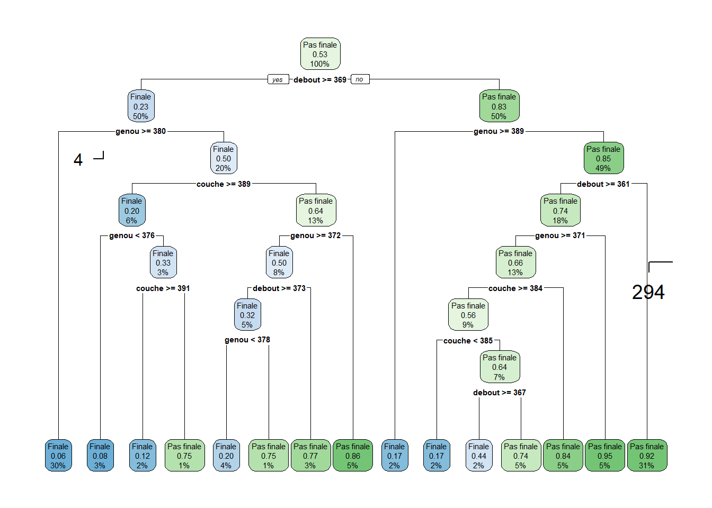
# Cartographie de la structure de l'arbre de classification CART pour la position debout
par(oma=c(2,12,2,12)+1,bg="white")
z <- as.matrix(carto[1:106,])
rownames(z) <- rownames(carto)[1:106]
colnames(z) <- stat$leaf
y <- seq(1,15,length.out=15)
x <- seq(1,106,length.out=106)
image(x,y,z,xlab="Intervalles de la position DEBOUT",ylab="Feuilles",main="Structure de l'arbre de classification CART pour la position DEBOUT",axes=FALSE,col=hcl.colors(12,palette = "mako"))
axis(1, at = x,labels = rownames(z),las=1,cex.axis=1.2)
axis(2, at = y,labels = colnames(z),las=2,cex.axis=1)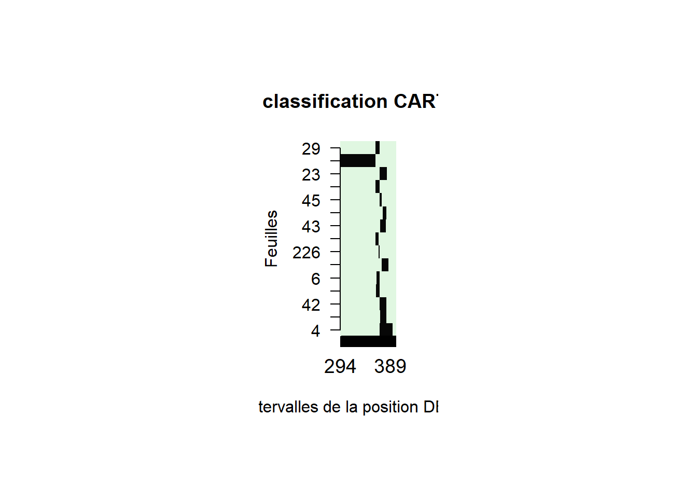
# Cartographie de la structure de l'arbre de classification CART pour la position genou
par(oma=c(2,12,2,12)+1,bg="white")
z <- as.matrix(carto[107:212,])
rownames(z) <- rownames(carto)[107:212]
colnames(z) <- stat$leaf
y <- seq(1,15,length.out=15)
x <- seq(1,106,length.out=106)
image(x,y,z,,xlab="Intervalles de la position GENOU",ylab="Feuilles",main="Structure de l'arbre de classification CART pour la position GENOU",axes=FALSE,col=hcl.colors(12,palette = "mako"))
axis(1, at = x,labels = rownames(z),las=1,cex.axis=1.2)
axis(2, at = y,labels = colnames(z),las=2,cex.axis=1)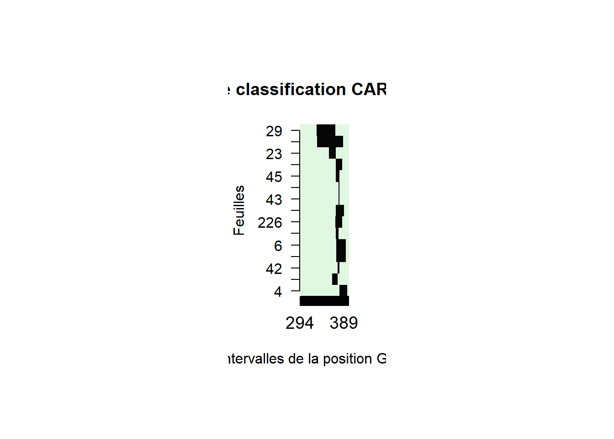
# Cartographie de la structure de l'arbre de classification CART pour la position couchée
par(oma=c(2,12,2,12)+1,bg="white")
z <- as.matrix(carto[213:318,])
rownames(z) <- rownames(carto)[213:318]
colnames(z) <- stat$leaf
y <- seq(1,15,length.out=15)
x <- seq(1,106,length.out=106)
image(x,y,z,xlab="Intervalles de la position COUCHE",ylab="Feuilles",main="Structure de l'arbre de classification CART pour la position COUCHE",axes=FALSE,col=hcl.colors(12,palette = "mako"))
axis(1, at = x,labels = rownames(z),las=1,cex.axis=1.2)
axis(2, at = y,labels = colnames(z),las=2,cex.axis=1)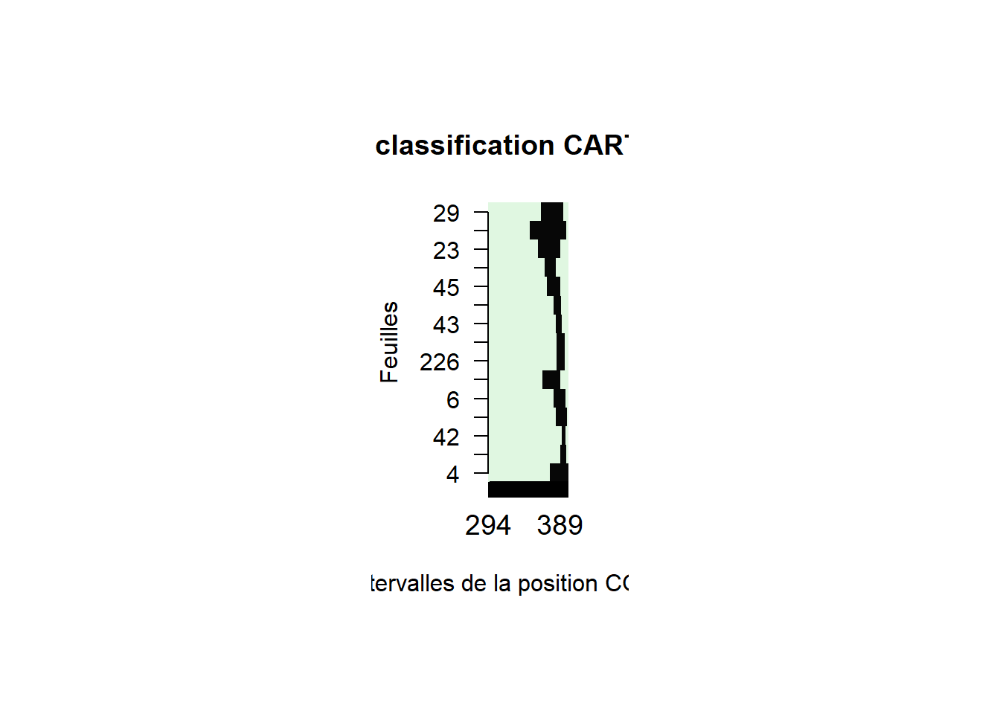
# Caractérisation la cible à l'aide des feuilles de CART
result$leaf_cat <- as.character(result$leaf)
par(oma=c(0,0,0,0)+1,bg="white")
cat_finale <- catdes(result[,c('res_qualif_ter','leaf_cat')],num.var=1,prob=0.01)See the Viewer window
$res_test_chi2
See the Viewer window
$res_allplot(cat_finale,barplot=TRUE)
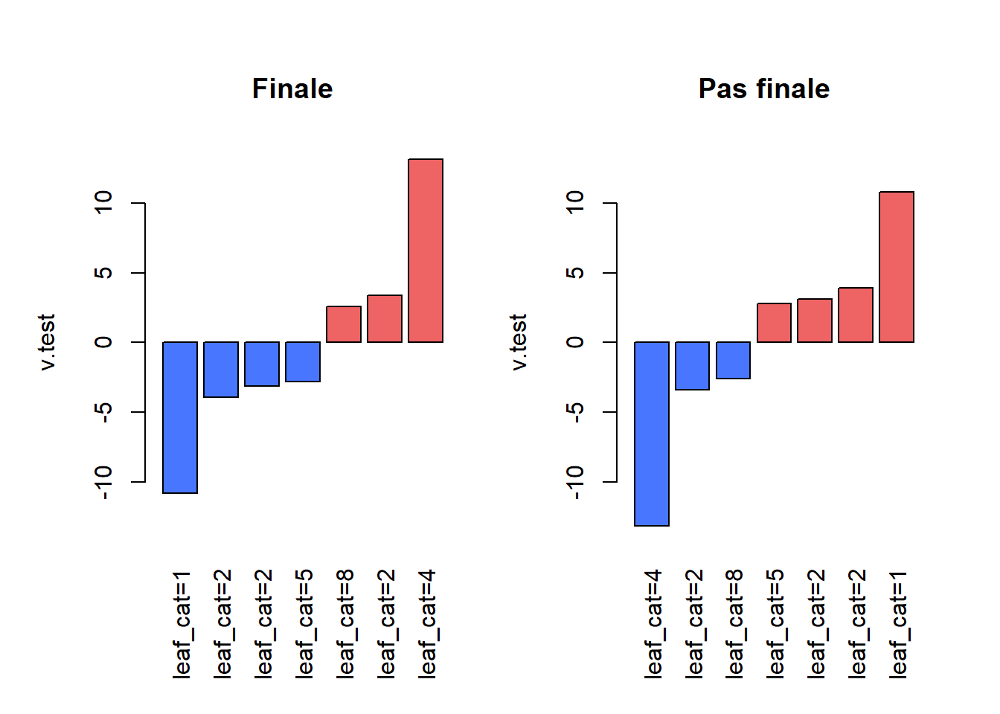
See the Plots window and the Viewer window$res_all
$res_test_chi2# Cartographie des lifts
par(oma=c(10,0,10,0)+1,bg="white")
z <- as.matrix(-lift[,4])
rownames(z) <- lift$s
colnames(z) <- c(' ')
y <- seq(1,1,length.out=1)
x <- seq(1,15,length.out=15)
# image(x,y,z,xlab="Feuilles",ylab="Lift",main="Cartographie des lifts par feuille de l'arbre de classification",axes=FALSE,col=hcl.colors(12,palette = "mako"))
# axis(1, at = x,labels = rownames(z),las=1,cex.axis=1.2)
# axis(2, at = y,labels = colnames(z),las=2,cex.axis=1)
# Constitution des fichier d'apprentissage et test avec les scores des trois positions et l'accès en finale
n <- 397
tirage <- runif(397)
tir_01 <- (tirage >= 0.8)*1
table(tir_01)tir_01
0 1
322 75 file_train_test <- data.frame(file_train,tir_01)
file_train_new <- file_train_test %>% filter(tir_01 == 0)
file_test_new <- file_train_test %>% filter(tir_01 == 1)
# Utilisation de la fonction rpart dans base sur le fichier d'apprentissage
model <- rpart(res_qualif_ter ~ ., data = file_train_new,method="class",control=rpart.control(minsplit = 10,cp=0.005))
summary(model)Call:
rpart(formula = res_qualif_ter ~ ., data = file_train_new, method = "class",
control = rpart.control(minsplit = 10, cp = 0.005))
n= 322
CP nsplit rel error xerror xstd
1 0.551724138 0 1.0000000 1.0000000 0.06157079
2 0.055172414 1 0.4482759 0.4758621 0.05077955
3 0.018390805 3 0.3379310 0.4206897 0.04849414
4 0.006896552 6 0.2827586 0.4206897 0.04849414
5 0.005000000 11 0.2413793 0.4758621 0.05077955
Variable importance
debout genou couche
42 33 25
Node number 1: 322 observations, complexity param=0.5517241
predicted class=Pas finale expected loss=0.4503106 P(node) =1
class counts: 145 177
probabilities: 0.450 0.550
left son=2 (162 obs) right son=3 (160 obs)
Primary splits:
debout < 368.5 to the right, improve=57.36302, (0 missing)
genou < 379.5 to the right, improve=48.94256, (0 missing)
couche < 388.5 to the right, improve=40.40678, (0 missing)
Surrogate splits:
genou < 378.5 to the right, agree=0.711, adj=0.419, (0 split)
couche < 388.5 to the right, agree=0.696, adj=0.388, (0 split)
Node number 2: 162 observations, complexity param=0.05517241
predicted class=Finale expected loss=0.2530864 P(node) =0.5031056
class counts: 121 41
probabilities: 0.747 0.253
left son=4 (95 obs) right son=5 (67 obs)
Primary splits:
genou < 379.5 to the right, improve=16.571970, (0 missing)
couche < 388.5 to the right, improve=14.545160, (0 missing)
debout < 373.5 to the right, improve= 6.759233, (0 missing)
Surrogate splits:
couche < 388.5 to the right, agree=0.716, adj=0.313, (0 split)
debout < 372.5 to the right, agree=0.654, adj=0.164, (0 split)
Node number 3: 160 observations, complexity param=0.006896552
predicted class=Pas finale expected loss=0.15 P(node) =0.4968944
class counts: 24 136
probabilities: 0.150 0.850
left son=6 (37 obs) right son=7 (123 obs)
Primary splits:
genou < 378.5 to the right, improve=3.902615, (0 missing)
debout < 360.5 to the right, improve=2.267552, (0 missing)
couche < 383.5 to the right, improve=1.891421, (0 missing)
Surrogate splits:
couche < 393.5 to the right, agree=0.787, adj=0.081, (0 split)
Node number 4: 95 observations
predicted class=Finale expected loss=0.06315789 P(node) =0.2950311
class counts: 89 6
probabilities: 0.937 0.063
Node number 5: 67 observations, complexity param=0.05517241
predicted class=Pas finale expected loss=0.4776119 P(node) =0.2080745
class counts: 32 35
probabilities: 0.478 0.522
left son=10 (21 obs) right son=11 (46 obs)
Primary splits:
couche < 388.5 to the right, improve=6.739254, (0 missing)
genou < 369.5 to the right, improve=2.439415, (0 missing)
debout < 371.5 to the right, improve=2.102796, (0 missing)
Node number 6: 37 observations, complexity param=0.006896552
predicted class=Pas finale expected loss=0.3513514 P(node) =0.1149068
class counts: 13 24
probabilities: 0.351 0.649
left son=12 (23 obs) right son=13 (14 obs)
Primary splits:
couche < 383.5 to the right, improve=1.9580330, (0 missing)
debout < 360.5 to the right, improve=1.9580330, (0 missing)
genou < 388.5 to the right, improve=0.6491786, (0 missing)
Surrogate splits:
genou < 379.5 to the right, agree=0.676, adj=0.143, (0 split)
debout < 359.5 to the right, agree=0.649, adj=0.071, (0 split)
Node number 7: 123 observations
predicted class=Pas finale expected loss=0.08943089 P(node) =0.3819876
class counts: 11 112
probabilities: 0.089 0.911
Node number 10: 21 observations
predicted class=Finale expected loss=0.1904762 P(node) =0.06521739
class counts: 17 4
probabilities: 0.810 0.190
Node number 11: 46 observations, complexity param=0.0183908
predicted class=Pas finale expected loss=0.326087 P(node) =0.1428571
class counts: 15 31
probabilities: 0.326 0.674
left son=22 (31 obs) right son=23 (15 obs)
Primary splits:
debout < 371.5 to the right, improve=2.995886, (0 missing)
genou < 371.5 to the right, improve=1.831426, (0 missing)
couche < 383.5 to the right, improve=1.086622, (0 missing)
Node number 12: 23 observations, complexity param=0.006896552
predicted class=Pas finale expected loss=0.4782609 P(node) =0.07142857
class counts: 11 12
probabilities: 0.478 0.522
left son=24 (11 obs) right son=25 (12 obs)
Primary splits:
couche < 388.5 to the left, improve=1.054018, (0 missing)
debout < 361 to the right, improve=0.746118, (0 missing)
genou < 379.5 to the left, improve=0.715103, (0 missing)
Surrogate splits:
genou < 384.5 to the right, agree=0.609, adj=0.182, (0 split)
debout < 339.5 to the right, agree=0.565, adj=0.091, (0 split)
Node number 13: 14 observations
predicted class=Pas finale expected loss=0.1428571 P(node) =0.04347826
class counts: 2 12
probabilities: 0.143 0.857
Node number 22: 31 observations, complexity param=0.0183908
predicted class=Pas finale expected loss=0.4516129 P(node) =0.09627329
class counts: 14 17
probabilities: 0.452 0.548
left son=44 (18 obs) right son=45 (13 obs)
Primary splits:
genou < 371 to the right, improve=2.1838990, (0 missing)
couche < 387.5 to the right, improve=0.8178017, (0 missing)
debout < 374.5 to the left, improve=0.3002933, (0 missing)
Surrogate splits:
couche < 376.5 to the right, agree=0.677, adj=0.231, (0 split)
Node number 23: 15 observations
predicted class=Pas finale expected loss=0.06666667 P(node) =0.04658385
class counts: 1 14
probabilities: 0.067 0.933
Node number 24: 11 observations, complexity param=0.006896552
predicted class=Finale expected loss=0.3636364 P(node) =0.03416149
class counts: 7 4
probabilities: 0.636 0.364
left son=48 (7 obs) right son=49 (4 obs)
Primary splits:
debout < 362.5 to the right, improve=1.87662300, (0 missing)
genou < 381 to the right, improve=0.23376620, (0 missing)
couche < 385.5 to the right, improve=0.02424242, (0 missing)
Surrogate splits:
genou < 382.5 to the left, agree=0.727, adj=0.25, (0 split)
Node number 25: 12 observations
predicted class=Pas finale expected loss=0.3333333 P(node) =0.03726708
class counts: 4 8
probabilities: 0.333 0.667
Node number 44: 18 observations, complexity param=0.0183908
predicted class=Finale expected loss=0.3888889 P(node) =0.05590062
class counts: 11 7
probabilities: 0.611 0.389
left son=88 (14 obs) right son=89 (4 obs)
Primary splits:
genou < 377.5 to the left, improve=3.8412700, (0 missing)
couche < 385.5 to the left, improve=0.6170940, (0 missing)
debout < 373.5 to the right, improve=0.1269841, (0 missing)
Node number 45: 13 observations, complexity param=0.006896552
predicted class=Pas finale expected loss=0.2307692 P(node) =0.04037267
class counts: 3 10
probabilities: 0.231 0.769
left son=90 (3 obs) right son=91 (10 obs)
Primary splits:
couche < 384.5 to the right, improve=1.4820510, (0 missing)
debout < 374.5 to the left, improve=0.4653846, (0 missing)
genou < 368.5 to the right, improve=0.2344322, (0 missing)
Node number 48: 7 observations
predicted class=Finale expected loss=0.1428571 P(node) =0.02173913
class counts: 6 1
probabilities: 0.857 0.143
Node number 49: 4 observations
predicted class=Pas finale expected loss=0.25 P(node) =0.01242236
class counts: 1 3
probabilities: 0.250 0.750
Node number 88: 14 observations
predicted class=Finale expected loss=0.2142857 P(node) =0.04347826
class counts: 11 3
probabilities: 0.786 0.214
Node number 89: 4 observations
predicted class=Pas finale expected loss=0 P(node) =0.01242236
class counts: 0 4
probabilities: 0.000 1.000
Node number 90: 3 observations
predicted class=Finale expected loss=0.3333333 P(node) =0.00931677
class counts: 2 1
probabilities: 0.667 0.333
Node number 91: 10 observations
predicted class=Pas finale expected loss=0.1 P(node) =0.0310559
class counts: 1 9
probabilities: 0.100 0.900 par(oma=c(0,0,0,0)+1,bg="white")
rpart.plot(model)
# Qualité de l'arbre sur l'échantillon d'apprentissage
n_train <- nrow(file_train_new)
pred_train_new <- predict(model)
result <- data.frame(file_train_new,pred_train_new)
result$pred <- (result$Finale >= 0.5)*1
tab_conting <- table(result$res_qualif_ter,result$pred)
tab_conting <- data.frame(tab_conting)
pct_bcl <- round(100*((tab_conting$Freq[2]+tab_conting$Freq[3])/sum(tab_conting$Freq)),2)
pct_max <- round(100*((tab_conting$Freq[2]+tab_conting$Freq[4])/sum(tab_conting$Freq)),2)
p_max <- pct_max/100
binf <- round(100*(p_max-1.96*sqrt(p_max*(1-p_max)/n_train)),2)
bsup <- round(100*(p_max+1.96*sqrt(p_max*(1-p_max)/n_train)),2)
pct_bcl[1] 89.13binf[1] 49.54bsup[1] 60.4# Qualité de l'arbre sur l'échantillon test
n_test <- nrow(file_test_new)
pred_test_new <- predict(model,newdata=file_test_new,type="class")
pred_test_new <- data.frame(pred_test_new)
result <- data.frame(file_test_new,pred_test_new)
tab_conting <- table(result$res_qualif_ter,result$pred_test_new)
tab_conting <- data.frame(tab_conting)
pct_bcl <- round(100*((tab_conting$Freq[1]+tab_conting$Freq[4])/sum(tab_conting$Freq)),2)
pct_max <- round(100*((tab_conting$Freq[2]+tab_conting$Freq[4])/sum(tab_conting$Freq)),2)
p_max <- pct_max/100
p_bcl <- pct_bcl/100
binf <- round(100*(p_max-1.96*sqrt(p_max*(1-p_max)/n_test)),2)
bsup <- round(100*(p_max+1.96*sqrt(p_max*(1-p_max)/n_test)),2)
pct_bcl[1] 77.33binf[1] 35.38bsup[1] 57.96v_test <- (p_bcl-p_max)/sqrt(p_max*(1-p_max)/n_test)
v_test[1] 5.322285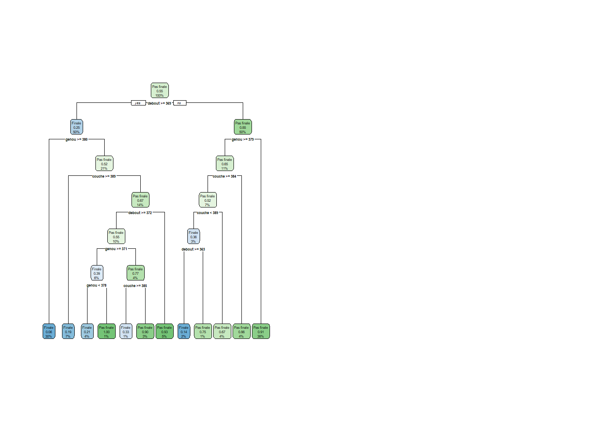
On reprend la démarche en ajoutant l’indicateur de reproductibilité parmi les variables explicatives.
## Fichier complet avec les scores des trois positions, la reproductibilité et l'accès en finale ##
file_train <- tir_para_R7_qualif_finale %>% select(res_qualif_ter,genou,couche,debout,disp_std)
# Utilisation de la fonction rpart dans base
model <- rpart(res_qualif_ter ~ ., data = file_train,method="class",control=rpart.control(minsplit = 10,cp=0.005))
summary(model)Call:
rpart(formula = res_qualif_ter ~ ., data = file_train, method = "class",
control = rpart.control(minsplit = 10, cp = 0.005))
n= 397
CP nsplit rel error xerror xstd
1 0.567567568 0 1.0000000 1.0000000 0.05372629
2 0.040540541 1 0.4324324 0.4540541 0.04398908
3 0.021621622 3 0.3513514 0.4108108 0.04237330
4 0.018918919 4 0.3297297 0.4324324 0.04320238
5 0.010810811 6 0.2918919 0.4000000 0.04194210
6 0.006756757 7 0.2810811 0.3567568 0.04009766
7 0.005405405 12 0.2378378 0.3513514 0.03985279
8 0.005000000 16 0.2162162 0.3513514 0.03985279
Variable importance
debout disp_std genou couche
31 26 24 19
Node number 1: 397 observations, complexity param=0.5675676
predicted class=Pas finale expected loss=0.465995 P(node) =1
class counts: 185 212
probabilities: 0.466 0.534
left son=2 (197 obs) right son=3 (200 obs)
Primary splits:
debout < 368.5 to the right, improve=70.62410, (0 missing)
genou < 381.5 to the right, improve=57.86134, (0 missing)
couche < 387.5 to the right, improve=40.38222, (0 missing)
disp_std < 0.008709028 to the left, improve=38.09981, (0 missing)
Surrogate splits:
disp_std < 0.007190067 to the left, agree=0.839, adj=0.675, (0 split)
genou < 380.5 to the right, agree=0.708, adj=0.411, (0 split)
couche < 388.5 to the right, agree=0.680, adj=0.355, (0 split)
Node number 2: 197 observations, complexity param=0.04054054
predicted class=Finale expected loss=0.2335025 P(node) =0.4962217
class counts: 151 46
probabilities: 0.766 0.234
left son=4 (119 obs) right son=5 (78 obs)
Primary splits:
genou < 379.5 to the right, improve=18.341300, (0 missing)
couche < 384.5 to the right, improve=14.352380, (0 missing)
debout < 373.5 to the right, improve= 6.905367, (0 missing)
disp_std < 0.007264203 to the right, improve= 1.590533, (0 missing)
Surrogate splits:
couche < 384.5 to the right, agree=0.711, adj=0.269, (0 split)
debout < 372.5 to the right, agree=0.655, adj=0.128, (0 split)
disp_std < 0.007647722 to the left, agree=0.640, adj=0.090, (0 split)
Node number 3: 200 observations, complexity param=0.02162162
predicted class=Pas finale expected loss=0.17 P(node) =0.5037783
class counts: 34 166
probabilities: 0.170 0.830
left son=6 (6 obs) right son=7 (194 obs)
Primary splits:
genou < 388.5 to the right, improve=5.443436, (0 missing)
debout < 360.5 to the right, improve=4.848575, (0 missing)
couche < 383.5 to the right, improve=2.783434, (0 missing)
disp_std < 0.008169688 to the left, improve=1.613789, (0 missing)
Surrogate splits:
couche < 394.5 to the right, agree=0.975, adj=0.167, (0 split)
Node number 4: 119 observations
predicted class=Finale expected loss=0.05882353 P(node) =0.2997481
class counts: 112 7
probabilities: 0.941 0.059
Node number 5: 78 observations, complexity param=0.04054054
predicted class=Finale expected loss=0.5 P(node) =0.1964736
class counts: 39 39
probabilities: 0.500 0.500
left son=10 (25 obs) right son=11 (53 obs)
Primary splits:
couche < 388.5 to the right, improve=6.622642, (0 missing)
disp_std < 0.007220886 to the right, improve=4.993651, (0 missing)
genou < 369.5 to the right, improve=3.165584, (0 missing)
debout < 371.5 to the right, improve=1.846154, (0 missing)
Surrogate splits:
disp_std < 0.006376568 to the right, agree=0.859, adj=0.56, (0 split)
Node number 6: 6 observations
predicted class=Finale expected loss=0.1666667 P(node) =0.01511335
class counts: 5 1
probabilities: 0.833 0.167
Node number 7: 194 observations, complexity param=0.006756757
predicted class=Pas finale expected loss=0.1494845 P(node) =0.488665
class counts: 29 165
probabilities: 0.149 0.851
left son=14 (72 obs) right son=15 (122 obs)
Primary splits:
debout < 360.5 to the right, improve=2.997019, (0 missing)
genou < 377.5 to the right, improve=2.463230, (0 missing)
disp_std < 0.008169688 to the left, improve=1.929897, (0 missing)
couche < 383.5 to the right, improve=1.650068, (0 missing)
Surrogate splits:
disp_std < 0.00850744 to the left, agree=0.830, adj=0.542, (0 split)
genou < 374.5 to the right, agree=0.686, adj=0.153, (0 split)
couche < 388.5 to the right, agree=0.634, adj=0.014, (0 split)
Node number 10: 25 observations, complexity param=0.005405405
predicted class=Finale expected loss=0.2 P(node) =0.06297229
class counts: 20 5
probabilities: 0.800 0.200
left son=20 (13 obs) right son=21 (12 obs)
Primary splits:
genou < 375.5 to the left, improve=0.8205128, (0 missing)
disp_std < 0.007220886 to the right, improve=0.8205128, (0 missing)
debout < 377 to the right, improve=0.6315789, (0 missing)
couche < 390.5 to the right, improve=0.5000000, (0 missing)
Surrogate splits:
disp_std < 0.006376568 to the right, agree=0.76, adj=0.500, (0 split)
couche < 392.5 to the right, agree=0.68, adj=0.333, (0 split)
debout < 372.5 to the right, agree=0.56, adj=0.083, (0 split)
Node number 11: 53 observations, complexity param=0.01891892
predicted class=Pas finale expected loss=0.3584906 P(node) =0.1335013
class counts: 19 34
probabilities: 0.358 0.642
left son=22 (32 obs) right son=23 (21 obs)
Primary splits:
genou < 371.5 to the right, improve=3.2345010, (0 missing)
disp_std < 0.004478734 to the left, improve=3.2279330, (0 missing)
debout < 371.5 to the right, improve=2.0059300, (0 missing)
couche < 383.5 to the right, improve=0.8744849, (0 missing)
Surrogate splits:
disp_std < 0.004697189 to the left, agree=0.736, adj=0.333, (0 split)
couche < 380.5 to the right, agree=0.642, adj=0.095, (0 split)
debout < 370.5 to the right, agree=0.623, adj=0.048, (0 split)
Node number 14: 72 observations, complexity param=0.006756757
predicted class=Pas finale expected loss=0.2638889 P(node) =0.1813602
class counts: 19 53
probabilities: 0.264 0.736
left son=28 (56 obs) right son=29 (16 obs)
Primary splits:
disp_std < 0.006085687 to the right, improve=2.8650790, (0 missing)
genou < 370.5 to the right, improve=2.3039000, (0 missing)
couche < 383.5 to the right, improve=2.2514430, (0 missing)
debout < 367.5 to the left, improve=0.7483416, (0 missing)
Surrogate splits:
couche < 380.5 to the right, agree=0.847, adj=0.312, (0 split)
debout < 367.5 to the left, agree=0.792, adj=0.062, (0 split)
Node number 15: 122 observations
predicted class=Pas finale expected loss=0.08196721 P(node) =0.3073048
class counts: 10 112
probabilities: 0.082 0.918
Node number 20: 13 observations
predicted class=Finale expected loss=0.07692308 P(node) =0.03274559
class counts: 12 1
probabilities: 0.923 0.077
Node number 21: 12 observations, complexity param=0.005405405
predicted class=Finale expected loss=0.3333333 P(node) =0.0302267
class counts: 8 4
probabilities: 0.667 0.333
left son=42 (8 obs) right son=43 (4 obs)
Primary splits:
couche < 390.5 to the right, improve=2.0833330, (0 missing)
disp_std < 0.007364847 to the right, improve=0.8888889, (0 missing)
debout < 371.5 to the right, improve=0.3333333, (0 missing)
Surrogate splits:
debout < 374.5 to the left, agree=0.75, adj=0.25, (0 split)
disp_std < 0.005668762 to the right, agree=0.75, adj=0.25, (0 split)
Node number 22: 32 observations, complexity param=0.01891892
predicted class=Finale expected loss=0.5 P(node) =0.08060453
class counts: 16 16
probabilities: 0.500 0.500
left son=44 (19 obs) right son=45 (13 obs)
Primary splits:
debout < 372.5 to the right, improve=3.1740890, (0 missing)
genou < 377.5 to the left, improve=2.6181820, (0 missing)
disp_std < 0.004529265 to the left, improve=1.9323670, (0 missing)
couche < 385.5 to the left, improve=0.6956522, (0 missing)
Surrogate splits:
disp_std < 0.004631481 to the left, agree=0.719, adj=0.308, (0 split)
couche < 380.5 to the right, agree=0.688, adj=0.231, (0 split)
genou < 377.5 to the left, agree=0.656, adj=0.154, (0 split)
Node number 23: 21 observations
predicted class=Pas finale expected loss=0.1428571 P(node) =0.05289673
class counts: 3 18
probabilities: 0.143 0.857
Node number 28: 56 observations, complexity param=0.006756757
predicted class=Pas finale expected loss=0.3392857 P(node) =0.1410579
class counts: 19 37
probabilities: 0.339 0.661
left son=56 (41 obs) right son=57 (15 obs)
Primary splits:
genou < 370.5 to the right, improve=3.0453540, (0 missing)
disp_std < 0.007087398 to the left, improve=2.0119050, (0 missing)
couche < 393.5 to the right, improve=0.6794699, (0 missing)
debout < 366.5 to the right, improve=0.5060695, (0 missing)
Surrogate splits:
disp_std < 0.01016357 to the left, agree=0.786, adj=0.2, (0 split)
Node number 29: 16 observations
predicted class=Pas finale expected loss=0 P(node) =0.04030227
class counts: 0 16
probabilities: 0.000 1.000
Node number 42: 8 observations
predicted class=Finale expected loss=0.125 P(node) =0.02015113
class counts: 7 1
probabilities: 0.875 0.125
Node number 43: 4 observations
predicted class=Pas finale expected loss=0.25 P(node) =0.01007557
class counts: 1 3
probabilities: 0.250 0.750
Node number 44: 19 observations, complexity param=0.01081081
predicted class=Finale expected loss=0.3157895 P(node) =0.04785894
class counts: 13 6
probabilities: 0.684 0.316
left son=88 (15 obs) right son=89 (4 obs)
Primary splits:
genou < 377.5 to the left, improve=1.9105260, (0 missing)
couche < 385.5 to the left, improve=1.0962410, (0 missing)
disp_std < 0.004529265 to the left, improve=0.8771930, (0 missing)
debout < 374.5 to the left, improve=0.1819549, (0 missing)
Surrogate splits:
disp_std < 0.002234117 to the right, agree=0.895, adj=0.5, (0 split)
Node number 45: 13 observations
predicted class=Pas finale expected loss=0.2307692 P(node) =0.03274559
class counts: 3 10
probabilities: 0.231 0.769
Node number 56: 41 observations, complexity param=0.006756757
predicted class=Pas finale expected loss=0.4390244 P(node) =0.1032746
class counts: 18 23
probabilities: 0.439 0.561
left son=112 (25 obs) right son=113 (16 obs)
Primary splits:
disp_std < 0.008169688 to the left, improve=3.3201220, (0 missing)
couche < 388.5 to the left, improve=1.4053780, (0 missing)
debout < 366.5 to the right, improve=1.1951220, (0 missing)
genou < 382.5 to the left, improve=0.7102735, (0 missing)
Surrogate splits:
couche < 388.5 to the left, agree=0.878, adj=0.688, (0 split)
Node number 57: 15 observations
predicted class=Pas finale expected loss=0.06666667 P(node) =0.03778338
class counts: 1 14
probabilities: 0.067 0.933
Node number 88: 15 observations, complexity param=0.005405405
predicted class=Finale expected loss=0.2 P(node) =0.03778338
class counts: 12 3
probabilities: 0.800 0.200
left son=176 (12 obs) right son=177 (3 obs)
Primary splits:
disp_std < 0.004529265 to the left, improve=1.63333300, (0 missing)
couche < 385.5 to the left, improve=0.98181820, (0 missing)
debout < 373.5 to the right, improve=0.13333330, (0 missing)
genou < 375.5 to the left, improve=0.08571429, (0 missing)
Surrogate splits:
couche < 385.5 to the left, agree=0.933, adj=0.667, (0 split)
Node number 89: 4 observations
predicted class=Pas finale expected loss=0.25 P(node) =0.01007557
class counts: 1 3
probabilities: 0.250 0.750
Node number 112: 25 observations, complexity param=0.006756757
predicted class=Finale expected loss=0.4 P(node) =0.06297229
class counts: 15 10
probabilities: 0.600 0.400
left son=224 (16 obs) right son=225 (9 obs)
Primary splits:
couche < 383.5 to the right, improve=2.0000000, (0 missing)
debout < 365.5 to the right, improve=1.7794120, (0 missing)
disp_std < 0.007856687 to the right, improve=1.0909090, (0 missing)
genou < 374.5 to the left, improve=0.8596491, (0 missing)
Surrogate splits:
disp_std < 0.006860458 to the right, agree=0.80, adj=0.444, (0 split)
debout < 362.5 to the right, agree=0.76, adj=0.333, (0 split)
genou < 372.5 to the right, agree=0.68, adj=0.111, (0 split)
Node number 113: 16 observations, complexity param=0.005405405
predicted class=Pas finale expected loss=0.1875 P(node) =0.04030227
class counts: 3 13
probabilities: 0.188 0.812
left son=226 (3 obs) right son=227 (13 obs)
Primary splits:
couche < 393.5 to the right, improve=1.6955130, (0 missing)
disp_std < 0.009132652 to the right, improve=1.4464290, (0 missing)
debout < 362.5 to the left, improve=0.6568182, (0 missing)
genou < 378 to the right, improve=0.5113636, (0 missing)
Node number 176: 12 observations
predicted class=Finale expected loss=0.08333333 P(node) =0.0302267
class counts: 11 1
probabilities: 0.917 0.083
Node number 177: 3 observations
predicted class=Pas finale expected loss=0.3333333 P(node) =0.007556675
class counts: 1 2
probabilities: 0.333 0.667
Node number 224: 16 observations
predicted class=Finale expected loss=0.25 P(node) =0.04030227
class counts: 12 4
probabilities: 0.750 0.250
Node number 225: 9 observations
predicted class=Pas finale expected loss=0.3333333 P(node) =0.02267003
class counts: 3 6
probabilities: 0.333 0.667
Node number 226: 3 observations
predicted class=Finale expected loss=0.3333333 P(node) =0.007556675
class counts: 2 1
probabilities: 0.667 0.333
Node number 227: 13 observations
predicted class=Pas finale expected loss=0.07692308 P(node) =0.03274559
class counts: 1 12
probabilities: 0.077 0.923 # Importance des variables
variable_importance_pct <- round(100*model$variable.importance/sum(model$variable.importance),1)
rpart.plot(model)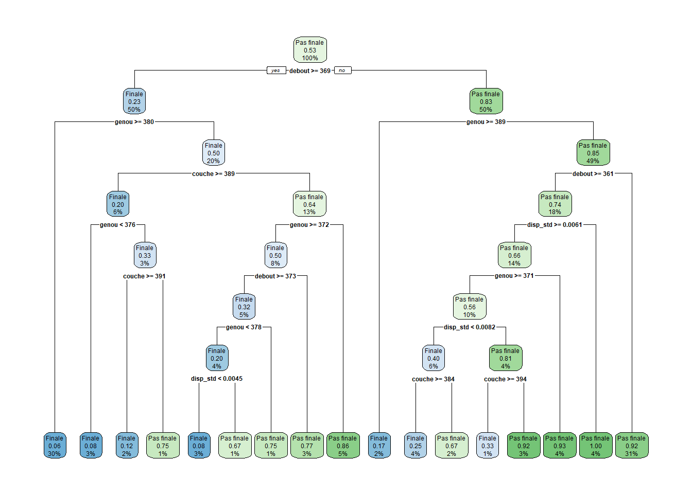
# Qualité de l'arbre sur l'échantillon complet
n_train <- nrow(file_train)
pred_train <- predict(model)
result <- data.frame(file_train,pred_train)
result$pred <- (result$Finale >= 0.5)*1
tab_conting <- table(result$res_qualif_ter,result$pred)
tab_conting <- data.frame(tab_conting)
table(result$res_qualif_ter,result$pred)
0 1
Finale 24 161
Pas finale 196 16# Constitution des fichier d'apprentissage et test avec les scores des trois positions et l'accès en finale
n <- 397
tirage <- runif(397)
tir_01 <- (tirage >= 0.8)*1
table(tir_01)tir_01
0 1
311 86 file_train_test <- data.frame(file_train,tir_01)
file_train_new <- file_train_test %>% filter(tir_01 == 0)
file_test_new <- file_train_test %>% filter(tir_01 == 1)
# Utilisation de la fonction rpart dans base sur le fichier d'apprentissage
model <- rpart(res_qualif_ter ~ ., data = file_train_new,method="class",control=rpart.control(minsplit = 10,cp=0.005))
summary(model)Call:
rpart(formula = res_qualif_ter ~ ., data = file_train_new, method = "class",
control = rpart.control(minsplit = 10, cp = 0.005))
n= 311
CP nsplit rel error xerror xstd
1 0.551020408 0 1.0000000 1.0000000 0.05989396
2 0.040816327 1 0.4489796 0.5510204 0.05265128
3 0.023809524 3 0.3673469 0.4489796 0.04905209
4 0.020408163 5 0.3197279 0.4421769 0.04877830
5 0.017006803 6 0.2993197 0.4217687 0.04792896
6 0.013605442 9 0.2448980 0.4217687 0.04792896
7 0.006802721 10 0.2312925 0.4013605 0.04703582
8 0.005000000 12 0.2176871 0.4353741 0.04849991
Variable importance
debout genou disp_std couche
31 28 25 16
Node number 1: 311 observations, complexity param=0.5510204
predicted class=Pas finale expected loss=0.4726688 P(node) =1
class counts: 147 164
probabilities: 0.473 0.527
left son=2 (153 obs) right son=3 (158 obs)
Primary splits:
debout < 369.5 to the right, improve=51.36895, (0 missing)
genou < 380.5 to the right, improve=43.18516, (0 missing)
couche < 388.5 to the right, improve=31.66358, (0 missing)
disp_std < 0.00936513 to the left, improve=26.71320, (0 missing)
Surrogate splits:
disp_std < 0.005839884 to the left, agree=0.804, adj=0.601, (0 split)
genou < 380.5 to the right, agree=0.698, adj=0.386, (0 split)
couche < 388.5 to the right, agree=0.691, adj=0.373, (0 split)
Node number 2: 153 observations, complexity param=0.04081633
predicted class=Finale expected loss=0.2352941 P(node) =0.4919614
class counts: 117 36
probabilities: 0.765 0.235
left son=4 (92 obs) right son=5 (61 obs)
Primary splits:
genou < 379.5 to the right, improve=15.110500, (0 missing)
couche < 384.5 to the right, improve=10.254950, (0 missing)
debout < 377.5 to the right, improve= 5.388430, (0 missing)
disp_std < 0.007264203 to the right, improve= 1.191265, (0 missing)
Surrogate splits:
couche < 384.5 to the right, agree=0.699, adj=0.246, (0 split)
debout < 372.5 to the right, agree=0.634, adj=0.082, (0 split)
disp_std < 0.007586699 to the left, agree=0.627, adj=0.066, (0 split)
Node number 3: 158 observations, complexity param=0.0170068
predicted class=Pas finale expected loss=0.1898734 P(node) =0.5080386
class counts: 30 128
probabilities: 0.190 0.810
left son=6 (52 obs) right son=7 (106 obs)
Primary splits:
genou < 377.5 to the right, improve=5.879003, (0 missing)
debout < 366.5 to the right, improve=4.220826, (0 missing)
couche < 383.5 to the right, improve=2.096684, (0 missing)
disp_std < 0.008743898 to the left, improve=2.044287, (0 missing)
Surrogate splits:
couche < 388.5 to the right, agree=0.734, adj=0.192, (0 split)
debout < 364.5 to the right, agree=0.715, adj=0.135, (0 split)
Node number 4: 92 observations
predicted class=Finale expected loss=0.05434783 P(node) =0.2958199
class counts: 87 5
probabilities: 0.946 0.054
Node number 5: 61 observations, complexity param=0.04081633
predicted class=Pas finale expected loss=0.4918033 P(node) =0.1961415
class counts: 30 31
probabilities: 0.492 0.508
left son=10 (19 obs) right son=11 (42 obs)
Primary splits:
couche < 388.5 to the right, improve=4.890300, (0 missing)
disp_std < 0.007220886 to the right, improve=3.485001, (0 missing)
genou < 370.5 to the right, improve=2.885287, (0 missing)
debout < 377.5 to the right, improve=1.798794, (0 missing)
Surrogate splits:
disp_std < 0.006982517 to the right, agree=0.836, adj=0.474, (0 split)
Node number 6: 52 observations, complexity param=0.0170068
predicted class=Pas finale expected loss=0.3846154 P(node) =0.1672026
class counts: 20 32
probabilities: 0.385 0.615
left son=12 (15 obs) right son=13 (37 obs)
Primary splits:
debout < 366.5 to the right, improve=3.354123, (0 missing)
disp_std < 0.00803028 to the left, improve=2.458703, (0 missing)
genou < 388.5 to the right, improve=1.909002, (0 missing)
couche < 383.5 to the right, improve=1.795940, (0 missing)
Surrogate splits:
disp_std < 0.007087398 to the left, agree=0.788, adj=0.267, (0 split)
genou < 388.5 to the right, agree=0.769, adj=0.200, (0 split)
couche < 393.5 to the right, agree=0.731, adj=0.067, (0 split)
Node number 7: 106 observations
predicted class=Pas finale expected loss=0.09433962 P(node) =0.340836
class counts: 10 96
probabilities: 0.094 0.906
Node number 10: 19 observations
predicted class=Finale expected loss=0.2105263 P(node) =0.06109325
class counts: 15 4
probabilities: 0.789 0.211
Node number 11: 42 observations, complexity param=0.02380952
predicted class=Pas finale expected loss=0.3571429 P(node) =0.1350482
class counts: 15 27
probabilities: 0.357 0.643
left son=22 (25 obs) right son=23 (17 obs)
Primary splits:
disp_std < 0.004762897 to the left, improve=3.2763030, (0 missing)
genou < 371.5 to the right, improve=2.7857140, (0 missing)
debout < 372.5 to the right, improve=2.3375660, (0 missing)
couche < 383.5 to the right, improve=0.4285714, (0 missing)
Surrogate splits:
genou < 369.5 to the right, agree=0.905, adj=0.765, (0 split)
couche < 385.5 to the left, agree=0.714, adj=0.294, (0 split)
debout < 370.5 to the right, agree=0.643, adj=0.118, (0 split)
Node number 12: 15 observations, complexity param=0.0170068
predicted class=Finale expected loss=0.3333333 P(node) =0.04823151
class counts: 10 5
probabilities: 0.667 0.333
left son=24 (12 obs) right son=25 (3 obs)
Primary splits:
disp_std < 0.006094212 to the right, improve=3.3333330, (0 missing)
genou < 383.5 to the right, improve=2.2222220, (0 missing)
couche < 389.5 to the right, improve=1.6666670, (0 missing)
debout < 367.5 to the right, improve=0.5555556, (0 missing)
Surrogate splits:
couche < 383 to the right, agree=0.867, adj=0.333, (0 split)
Node number 13: 37 observations, complexity param=0.01360544
predicted class=Pas finale expected loss=0.2702703 P(node) =0.1189711
class counts: 10 27
probabilities: 0.270 0.730
left son=26 (10 obs) right son=27 (27 obs)
Primary splits:
disp_std < 0.00803028 to the left, improve=2.9797800, (0 missing)
couche < 389.5 to the left, improve=1.0462070, (0 missing)
debout < 360.5 to the right, improve=0.9864075, (0 missing)
genou < 386 to the left, improve=0.4769475, (0 missing)
Surrogate splits:
debout < 360.5 to the right, agree=0.784, adj=0.2, (0 split)
Node number 22: 25 observations, complexity param=0.02380952
predicted class=Finale expected loss=0.48 P(node) =0.08038585
class counts: 13 12
probabilities: 0.520 0.480
left son=44 (19 obs) right son=45 (6 obs)
Primary splits:
genou < 377.5 to the left, improve=4.269474, (0 missing)
disp_std < 0.002234117 to the right, improve=1.843636, (0 missing)
debout < 372.5 to the right, improve=1.715294, (0 missing)
couche < 379.5 to the right, improve=1.067302, (0 missing)
Surrogate splits:
disp_std < 0.002234117 to the right, agree=0.8, adj=0.167, (0 split)
Node number 23: 17 observations
predicted class=Pas finale expected loss=0.1176471 P(node) =0.05466238
class counts: 2 15
probabilities: 0.118 0.882
Node number 24: 12 observations
predicted class=Finale expected loss=0.1666667 P(node) =0.03858521
class counts: 10 2
probabilities: 0.833 0.167
Node number 25: 3 observations
predicted class=Pas finale expected loss=0 P(node) =0.009646302
class counts: 0 3
probabilities: 0.000 1.000
Node number 26: 10 observations, complexity param=0.006802721
predicted class=Finale expected loss=0.4 P(node) =0.03215434
class counts: 6 4
probabilities: 0.600 0.400
left son=52 (3 obs) right son=53 (7 obs)
Primary splits:
genou < 379.5 to the left, improve=1.371429, (0 missing)
couche < 383.5 to the right, improve=0.800000, (0 missing)
debout < 364 to the left, improve=0.300000, (0 missing)
disp_std < 0.007345337 to the right, improve=0.300000, (0 missing)
Surrogate splits:
disp_std < 0.006712803 to the left, agree=0.8, adj=0.333, (0 split)
Node number 27: 27 observations, complexity param=0.006802721
predicted class=Pas finale expected loss=0.1481481 P(node) =0.08681672
class counts: 4 23
probabilities: 0.148 0.852
left son=54 (3 obs) right son=55 (24 obs)
Primary splits:
disp_std < 0.01929936 to the right, improve=1.8148150, (0 missing)
debout < 349 to the left, improve=1.1700780, (0 missing)
couche < 385.5 to the right, improve=0.9481481, (0 missing)
genou < 384.5 to the left, improve=0.2693603, (0 missing)
Surrogate splits:
debout < 339.5 to the left, agree=0.926, adj=0.333, (0 split)
Node number 44: 19 observations, complexity param=0.02040816
predicted class=Finale expected loss=0.3157895 P(node) =0.06109325
class counts: 13 6
probabilities: 0.684 0.316
left son=88 (16 obs) right son=89 (3 obs)
Primary splits:
genou < 371.5 to the right, improve=3.335526, (0 missing)
debout < 373.5 to the right, improve=1.448622, (0 missing)
couche < 379.5 to the right, improve=1.096241, (0 missing)
disp_std < 0.00282208 to the right, improve=1.096241, (0 missing)
Surrogate splits:
debout < 370.5 to the right, agree=0.895, adj=0.333, (0 split)
Node number 45: 6 observations
predicted class=Pas finale expected loss=0 P(node) =0.0192926
class counts: 0 6
probabilities: 0.000 1.000
Node number 52: 3 observations
predicted class=Finale expected loss=0 P(node) =0.009646302
class counts: 3 0
probabilities: 1.000 0.000
Node number 53: 7 observations
predicted class=Pas finale expected loss=0.4285714 P(node) =0.02250804
class counts: 3 4
probabilities: 0.429 0.571
Node number 54: 3 observations
predicted class=Finale expected loss=0.3333333 P(node) =0.009646302
class counts: 2 1
probabilities: 0.667 0.333
Node number 55: 24 observations
predicted class=Pas finale expected loss=0.08333333 P(node) =0.07717042
class counts: 2 22
probabilities: 0.083 0.917
Node number 88: 16 observations
predicted class=Finale expected loss=0.1875 P(node) =0.05144695
class counts: 13 3
probabilities: 0.812 0.187
Node number 89: 3 observations
predicted class=Pas finale expected loss=0 P(node) =0.009646302
class counts: 0 3
probabilities: 0.000 1.000 rpart.plot(model)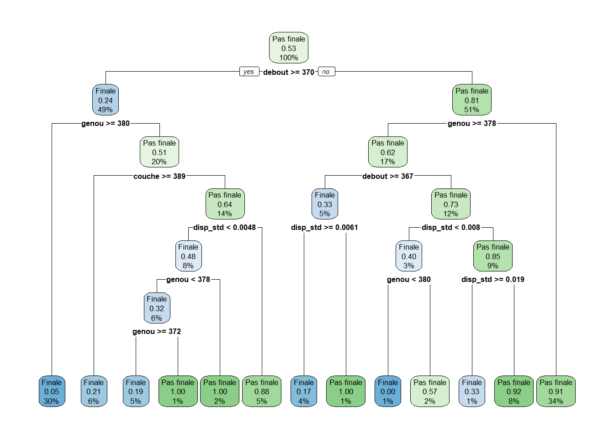
# Qualité de l'arbre sur l'échantillon d'apprentissage
n_train <- nrow(file_train_new)
pred_train_new <- predict(model)
result <- data.frame(file_train_new,pred_train_new)
result$pred <- (result$Finale >= 0.5)*1
tab_conting <- table(result$res_qualif_ter,result$pred)
tab_conting <- data.frame(tab_conting)
pct_bcl <- round(100*((tab_conting$Freq[2]+tab_conting$Freq[3])/sum(tab_conting$Freq)),2)
pct_max <- round(100*((tab_conting$Freq[2]+tab_conting$Freq[4])/sum(tab_conting$Freq)),2)
p_max <- pct_max/100
binf <- round(100*(p_max-1.96*sqrt(p_max*(1-p_max)/n_train)),2)
bsup <- round(100*(p_max+1.96*sqrt(p_max*(1-p_max)/n_train)),2)
pct_bcl[1] 89.71binf[1] 47.18bsup[1] 58.28# Qualité de l'arbre sur l'échantillon test
n_test <- nrow(file_test_new)
pred_test_new <- predict(model,newdata=file_test_new,type="class")
pred_test_new <- data.frame(pred_test_new)
result <- data.frame(file_test_new,pred_test_new)
tab_conting <- table(result$res_qualif_ter,result$pred_test_new)
tab_conting <- data.frame(tab_conting)
pct_bcl <- round(100*((tab_conting$Freq[1]+tab_conting$Freq[4])/sum(tab_conting$Freq)),2)
pct_max <- round(100*((tab_conting$Freq[2]+tab_conting$Freq[4])/sum(tab_conting$Freq)),2)
p_max <- pct_max/100
p_bcl <- pct_bcl/100
binf <- round(100*(p_max-1.96*sqrt(p_max*(1-p_max)/n_test)),2)
bsup <- round(100*(p_max+1.96*sqrt(p_max*(1-p_max)/n_test)),2)
pct_bcl[1] 81.4binf[1] 45.31bsup[1] 66.31v_test <- (p_bcl-p_max)/sqrt(p_max*(1-p_max)/n_test)
v_test[1] 4.778609Les forêts aléatoires sont utilisées pour prédire l’accès à la finale. On examine notamment l’importance des variables et l’erreur Out Of Bag.
###################
## Random Forest ##
###################
## Fichier complet avec les scores des trois positions et l'accès en finale ##
file_train <- tir_para_R7_qualif_finale %>% select(res_qualif_ter,genou,couche,debout)
# Utilisation de la fonction randomForest du package randomForest
model <- randomForest(res_qualif_ter ~ ., data = file_train, ntree = 500)
# Importance des variables
model$importance MeanDecreaseGini
genou 62.88278
couche 48.03921
debout 71.90897variable_importance_order <- model$importance[order(model$importance[,1],decreasing = TRUE),]
variable_importance_order debout genou couche
71.90897 62.88278 48.03921 variable_importance_pct <- round(100*variable_importance_order/sum(variable_importance_order))
variable_importance_pctdebout genou couche
39 34 26 varImpPlot(model,cex=2, pch=17)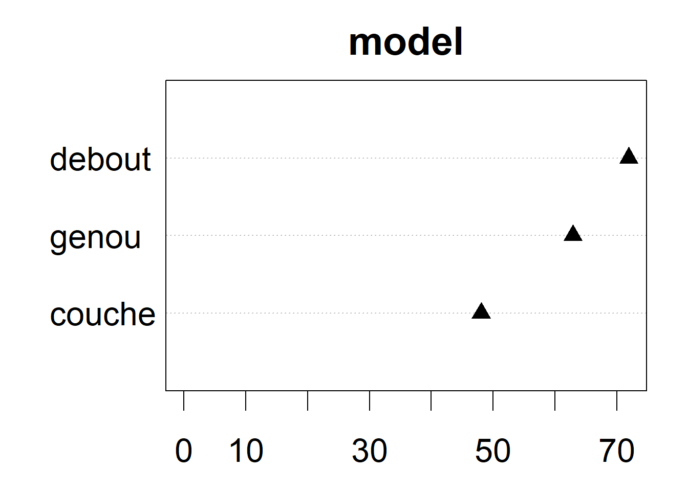
# Erreur OBB (Out Of Bag)
plot(model$err.rate[,1],type="l",xlab="nombre d'arbres",ylab="erreur OBB")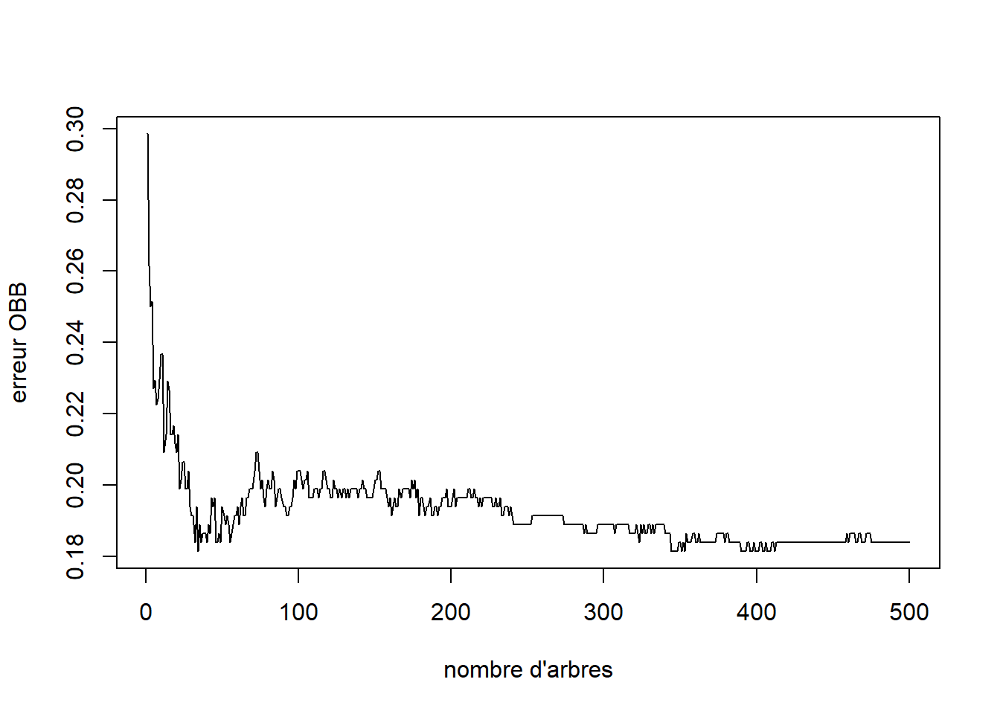
## Fichier complet avec les scores des trois positions, la reproductibilité et l'accès en finale ##
file_train <- tir_para_R7_qualif_finale %>% select(res_qualif_ter,genou,couche,debout,disp_std)
# Utilisation de la fonction randomForest du package randomForest
model <- randomForest(res_qualif_ter ~ ., data = file_train, ntree = 500)
# Importance des variables
model$importance MeanDecreaseGini
genou 55.13236
couche 34.81259
debout 68.82176
disp_std 36.52764variable_importance_order <- model$importance[order(model$importance[,1],decreasing = TRUE),]
variable_importance_order debout genou disp_std couche
68.82176 55.13236 36.52764 34.81259 variable_importance_pct <- round(100*variable_importance_order/sum(variable_importance_order))
variable_importance_pct debout genou disp_std couche
35 28 19 18 varImpPlot(model,cex=2, pch=17)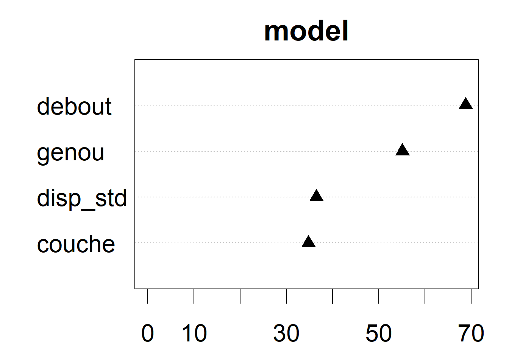
# Erreur OBB (Out Of Bag)
plot(model$err.rate[,1],type="l",xlab="nombre d'arbres",ylab="erreur OBB")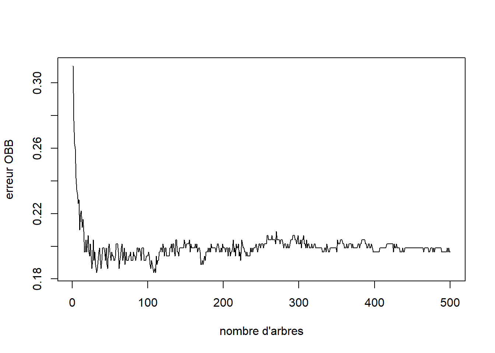
On modélise la probabilité d’accès à la finale à partir des scores, puis on évalue les performances du modèle sur l’ensemble des données et sur des échantillons d’apprentissage et de test.
########################################
## Régression logistique dichotomique ##
########################################
## Fichier complet avec les scores des trois positions et l'accès en finale ##
file_train <- tir_para_R7_qualif_finale %>% select(res_qualif_ter,genou,couche,debout)
file_train$acces_finale <- (file_train$res_qualif_ter == "Finale")*1
# Visualiser avant tout !!!
ggpairs(file_train[,1:4])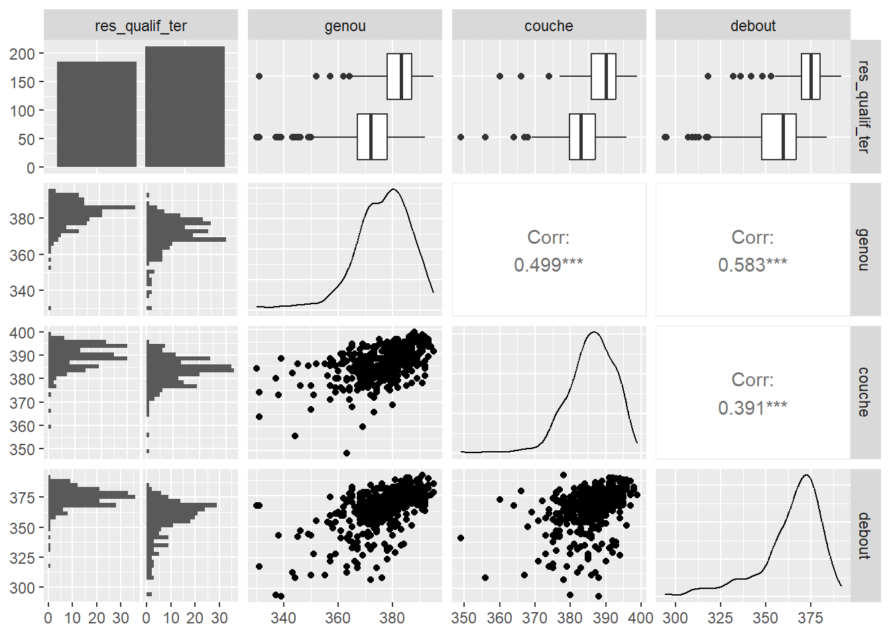
plot(res_qualif_ter ~ debout, data = file_train)
plot(res_qualif_ter ~ genou, data = file_train)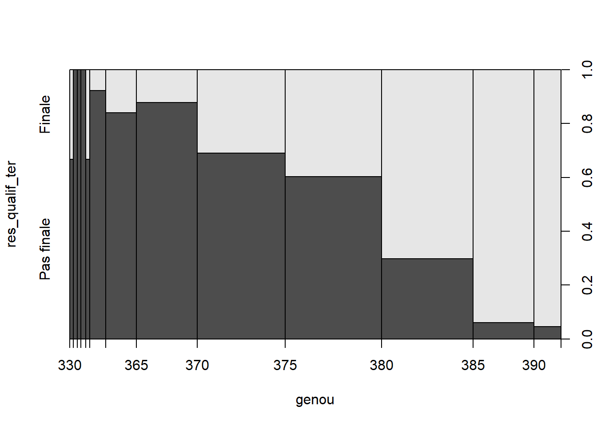
plot(res_qualif_ter ~ couche, data = file_train)
## Fichier complet avec les scores des trois positions, la reproductibilité et l'accès en finale ##
file_train <- tir_para_R7_qualif_finale %>% select(res_qualif_ter,genou,couche,debout,disp_std)
file_train$acces_finale <- (file_train$res_qualif_ter == "Finale")*1
# Visualiser avant tout !!!
ggpairs(file_train[,1:5])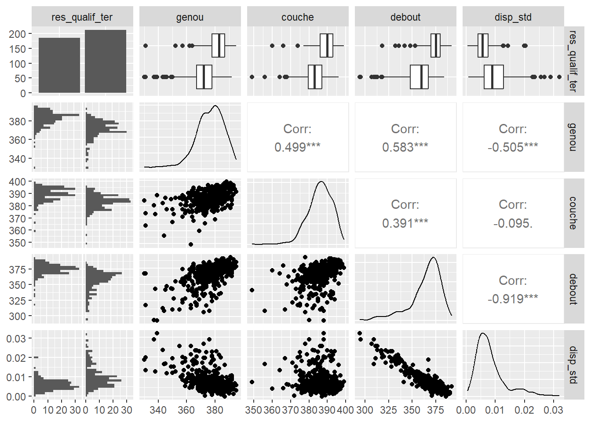
plot(res_qualif_ter ~ debout, data = file_train)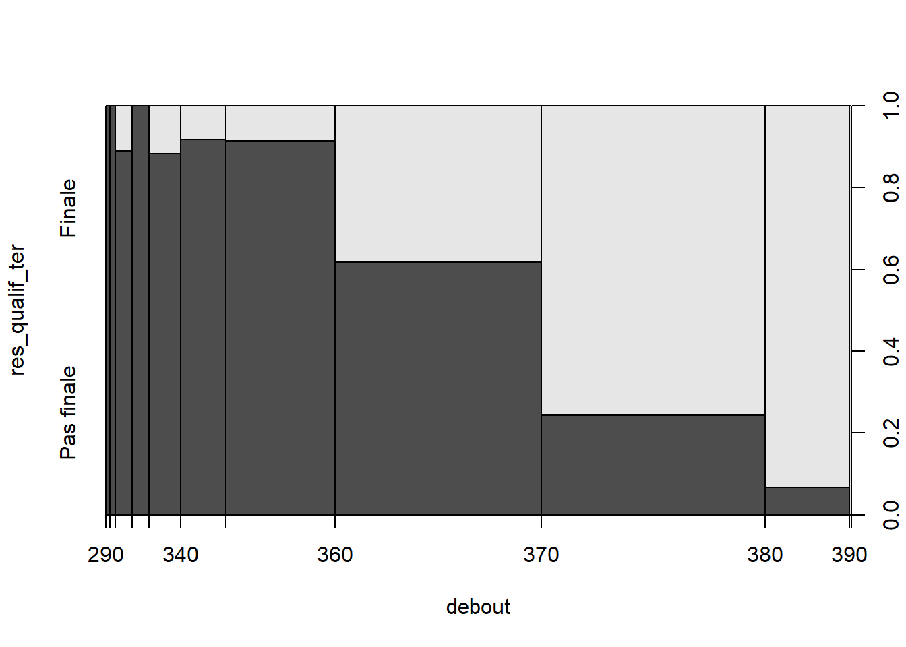
plot(res_qualif_ter ~ genou, data = file_train)
plot(res_qualif_ter ~ couche, data = file_train)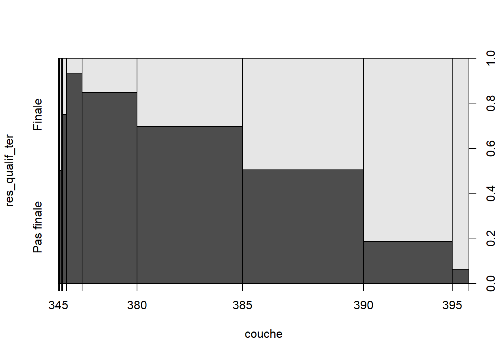
plot(res_qualif_ter ~ disp_std, data = file_train)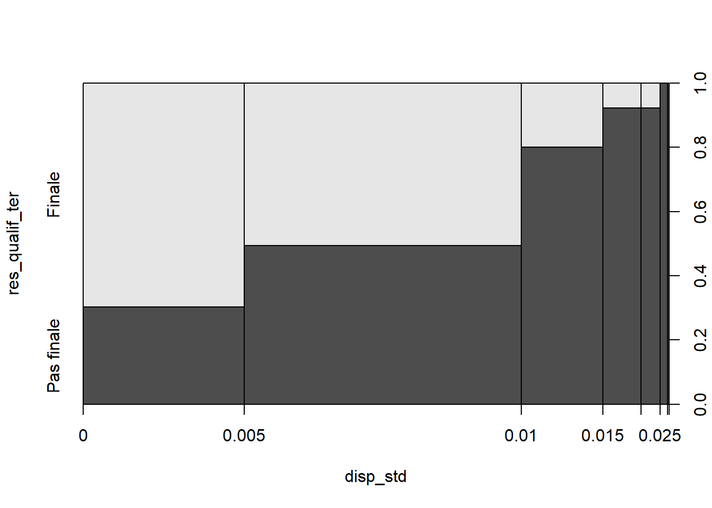
# Régression logistique simple avec la position couchée
reg <- glm(acces_finale ~ couche, data = file_train, family = binomial(logit))
beta_0 <- reg$coef[1]
beta_1 <- reg$coef[2]
coupure_couche <- -beta_0/beta_1
summary(reg)
Call:
glm(formula = acces_finale ~ couche, family = binomial(logit),
data = file_train)
Coefficients:
Estimate Std. Error z value Pr(>|z|)
(Intercept) -76.05774 9.07326 -8.383 <2e-16 ***
couche 0.19650 0.02346 8.377 <2e-16 ***
---
Signif. codes: 0 '***' 0.001 '**' 0.01 '*' 0.05 '.' 0.1 ' ' 1
(Dispersion parameter for binomial family taken to be 1)
Null deviance: 548.52 on 396 degrees of freedom
Residual deviance: 446.41 on 395 degrees of freedom
AIC: 450.41
Number of Fisher Scoring iterations: 4file_train$pred_couche <- predict(reg)
plot(file_train$couche,file_train$pred_couche, type="n", main="Accès en finale prédit vs score position couchée",xlab="Position couchée",ylab="Accès en finale estimé")
text(file_train$couche,file_train$pred_couche,rownames(file_train),col=c("green","red")[file_train$res_qualif_ter],cex=1)
abline(h=0,v=coupure_couche)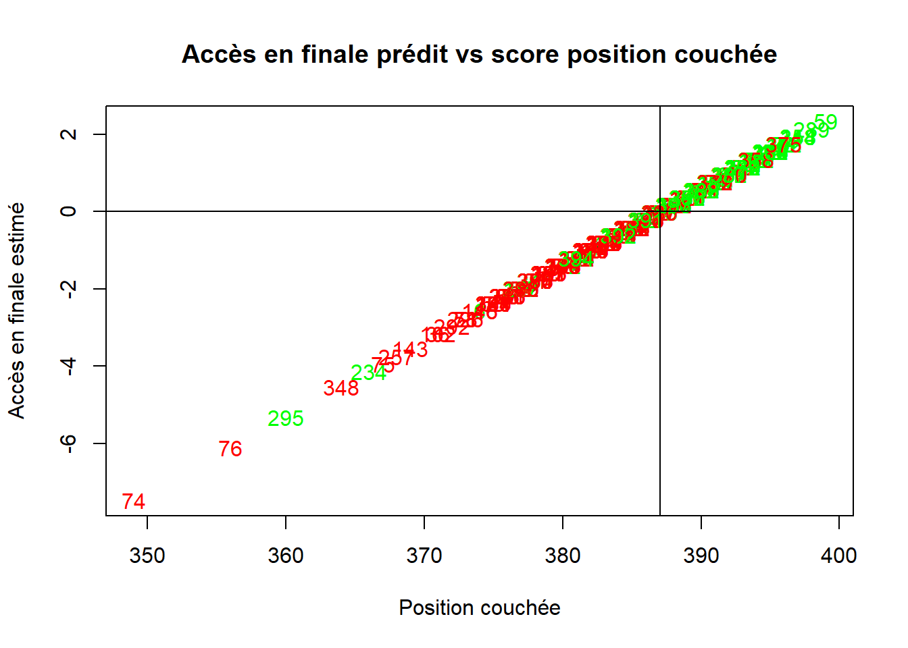
# Régression logistique simple avec la position genou
reg <- glm(acces_finale ~ genou, data = file_train, family = binomial(logit))
beta_0 <- reg$coef[1]
beta_1 <- reg$coef[2]
coupure_genou <- -beta_0/beta_1
summary(reg)
Call:
glm(formula = acces_finale ~ genou, family = binomial(logit),
data = file_train)
Coefficients:
Estimate Std. Error z value Pr(>|z|)
(Intercept) -60.62097 6.67449 -9.082 <2e-16 ***
genou 0.16042 0.01767 9.081 <2e-16 ***
---
Signif. codes: 0 '***' 0.001 '**' 0.01 '*' 0.05 '.' 0.1 ' ' 1
(Dispersion parameter for binomial family taken to be 1)
Null deviance: 548.52 on 396 degrees of freedom
Residual deviance: 410.89 on 395 degrees of freedom
AIC: 414.89
Number of Fisher Scoring iterations: 5file_train$pred_genou <- predict(reg)
plot(file_train$genou,file_train$pred_genou, type="n", main="Accès en finale prédit vs score position genou",xlab="Position genou",ylab="Accès en finale estimé")
text(file_train$genou,file_train$pred_genou,rownames(file_train),col=c("green","red")[file_train$res_qualif_ter],cex=1)
abline(h=0,v=coupure_genou)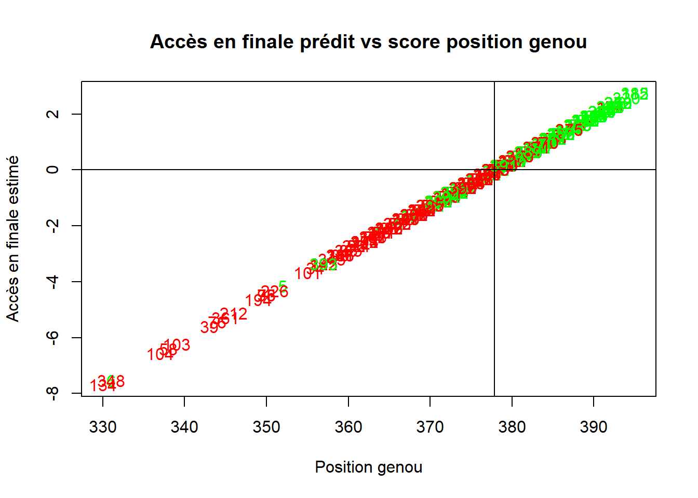
# Régression logistique simple avec la position debout
reg <- glm(acces_finale ~ debout, data = file_train, family = binomial(logit))
beta_0 <- reg$coef[1]
beta_1 <- reg$coef[2]
coupure_debout <- -beta_0/beta_1
summary(reg)
Call:
glm(formula = acces_finale ~ debout, family = binomial(logit),
data = file_train)
Coefficients:
Estimate Std. Error z value Pr(>|z|)
(Intercept) -50.63225 5.65111 -8.960 <2e-16 ***
debout 0.13749 0.01531 8.982 <2e-16 ***
---
Signif. codes: 0 '***' 0.001 '**' 0.01 '*' 0.05 '.' 0.1 ' ' 1
(Dispersion parameter for binomial family taken to be 1)
Null deviance: 548.52 on 396 degrees of freedom
Residual deviance: 377.09 on 395 degrees of freedom
AIC: 381.09
Number of Fisher Scoring iterations: 6file_train$pred_debout <- predict(reg)
plot(file_train$debout,file_train$pred_debout, type="n", main="Accès en finale prédit vs score position debout",xlab="Position debout",ylab="Accès en finale estimé")
text(file_train$debout,file_train$pred_debout,col=c("green","red")[file_train$res_qualif_ter],cex=1)
abline(h=0,v=coupure_debout)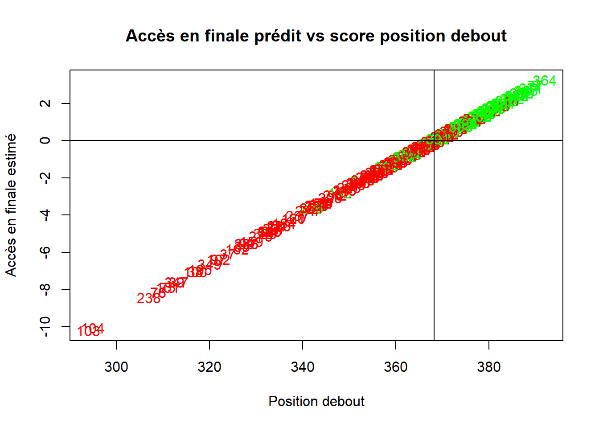
# Régression logistique simple avec la reproductibilité
reg <- glm(acces_finale ~ disp_std, data = file_train, family = binomial(logit))
beta_0 <- reg$coef[1]
beta_1 <- reg$coef[2]
coupure_disp_std <- -beta_0/beta_1
summary(reg)
Call:
glm(formula = acces_finale ~ disp_std, family = binomial(logit),
data = file_train)
Coefficients:
Estimate Std. Error z value Pr(>|z|)
(Intercept) 1.7706 0.2688 6.587 4.49e-11 ***
disp_std -250.5227 34.9479 -7.168 7.58e-13 ***
---
Signif. codes: 0 '***' 0.001 '**' 0.01 '*' 0.05 '.' 0.1 ' ' 1
(Dispersion parameter for binomial family taken to be 1)
Null deviance: 548.52 on 396 degrees of freedom
Residual deviance: 463.14 on 395 degrees of freedom
AIC: 467.14
Number of Fisher Scoring iterations: 5file_train$pred_disp_std <- predict(reg)
plot(file_train$disp_std,file_train$pred_disp_std, type="n", main="Accès en finale prédit vs reproductibilité",xlab="Ecart-type",ylab="Accès en finale estimé")
text(file_train$disp_std,file_train$pred_disp_std,col=c("green","red")[file_train$res_qualif_ter],cex=1)
abline(h=0,v=coupure_disp_std)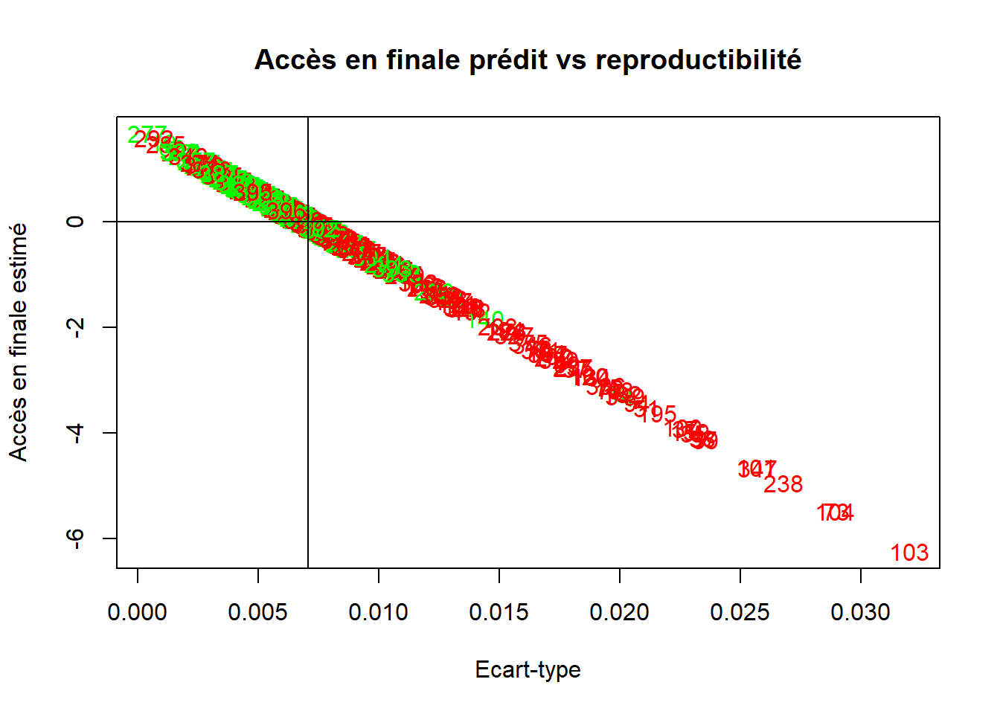
# Régression logistique multiple avec les trois positions
reg <- glm(acces_finale ~ genou+couche+debout, data = file_train, family = binomial(logit))
summary(reg)
Call:
glm(formula = acces_finale ~ genou + couche + debout, family = binomial(logit),
data = file_train)
Coefficients:
Estimate Std. Error z value Pr(>|z|)
(Intercept) -111.98401 12.33525 -9.078 < 2e-16 ***
genou 0.08462 0.02010 4.209 2.56e-05 ***
couche 0.11361 0.02791 4.070 4.70e-05 ***
debout 0.09832 0.01581 6.220 4.98e-10 ***
---
Signif. codes: 0 '***' 0.001 '**' 0.01 '*' 0.05 '.' 0.1 ' ' 1
(Dispersion parameter for binomial family taken to be 1)
Null deviance: 548.52 on 396 degrees of freedom
Residual deviance: 320.36 on 393 degrees of freedom
AIC: 328.36
Number of Fisher Scoring iterations: 6file_train$pred_all <- predict(reg)
# Régression logistique multiple avec les trois positions et la reproductibilité
reg <- glm(acces_finale ~ genou+couche+debout+disp_std, data = file_train, family = binomial(logit))
summary(reg)
Call:
glm(formula = acces_finale ~ genou + couche + debout + disp_std,
family = binomial(logit), data = file_train)
Coefficients:
Estimate Std. Error z value Pr(>|z|)
(Intercept) -119.99875 13.23033 -9.070 < 2e-16 ***
genou 0.09696 0.02109 4.598 4.27e-06 ***
couche 0.05045 0.04058 1.243 0.2137
debout 0.16919 0.03838 4.408 1.04e-05 ***
disp_std 237.18893 116.19737 2.041 0.0412 *
---
Signif. codes: 0 '***' 0.001 '**' 0.01 '*' 0.05 '.' 0.1 ' ' 1
(Dispersion parameter for binomial family taken to be 1)
Null deviance: 548.52 on 396 degrees of freedom
Residual deviance: 316.38 on 392 degrees of freedom
AIC: 326.38
Number of Fisher Scoring iterations: 6file_train$pred_all <- predict(reg)
## Qualité du modèle logit sur l'échantillon total ##
n <- 397
pred_acces_finale <- matrix(0,nrow=n)
for (i in 1:n)
{if (file_train$pred_all[i] >= 0) {pred_acces_finale[i] <- "Finale"}
else {pred_acces_finale[i] <- "Pas finale"}
}
file_train$pred_acces_finale <- pred_acces_finale
tab_conting <- table(file_train$res_qualif_ter,file_train$pred_acces_finale)
tab_conting <- data.frame(tab_conting)
pct_bcl <- round(100*((tab_conting$Freq[1]+tab_conting$Freq[4])/sum(tab_conting$Freq)),2)
pct_max <- round(100*((tab_conting$Freq[2]+tab_conting$Freq[4])/sum(tab_conting$Freq)),2)
p_max <- pct_max/100
binf <- round(100*(p_max-1.96*sqrt(p_max*(1-p_max)/n)),2)
bsup <- round(100*(p_max+1.96*sqrt(p_max*(1-p_max)/n)),2)
pct_bcl[1] 83.12binf[1] 48.49bsup[1] 58.31## Qualité du modèle logit binaire sur les échantillons d'apprentissage et test ##
file_train <- tir_para_R7_qualif_finale %>% select(res_qualif_ter,genou,couche,debout)
file_train$acces_finale <- (file_train$res_qualif_ter == "Finale")*1
n <- 397
tirage <- runif(397)
tir_01 <- (tirage >= 0.8)*1
table(tir_01)tir_01
0 1
321 76 file_train_test <- data.frame(file_train,tir_01)
file_train_new <- file_train_test %>% filter(tir_01 == 0)
file_test_new <- file_train_test %>% filter(tir_01 == 1)
reg <- glm(acces_finale ~ genou+couche+debout, data = file_train_new, family = binomial(logit))
# reg <- glm(acces_finale ~ genou+couche+debout+disp_std, data = file_train_new, family = binomial(logit))
# summary(reg)
n_train <- nrow(file_train_new)
pred_train_new <- predict(reg)
result <- data.frame(file_train_new,pred_train_new)
result$pred <- (result$pred_train_new >= 0)*1
tab_conting <- table(result$res_qualif_ter,result$pred)
tab_conting <- data.frame(tab_conting)
pct_bcl <- round(100*((tab_conting$Freq[2]+tab_conting$Freq[3])/sum(tab_conting$Freq)),2)
pct_max <- round(100*((tab_conting$Freq[2]+tab_conting$Freq[4])/sum(tab_conting$Freq)),2)
p_max <- pct_max/100
binf <- round(100*(p_max-1.96*sqrt(p_max*(1-p_max)/n_train)),2)
bsup <- round(100*(p_max+1.96*sqrt(p_max*(1-p_max)/n_train)),2)
pct_bcl[1] 82.55binf[1] 46.88bsup[1] 57.8n <- nrow(file_test_new)
n_test <- nrow(file_test_new)
pred_test_new <- predict(reg,newdata=file_test_new)
pred_test_new <- data.frame(pred_test_new)
result <- data.frame(file_test_new,pred_test_new)
result$pred_all <- (result$pred_test_new >= 0)*1
pred_acces_finale <- matrix(0,nrow=n)
for (i in 1:n)
{if (result$pred_all[i] == 1) {pred_acces_finale[i] <- "Finale"}
else {pred_acces_finale[i] <- "Pas finale"}
}
result$pred_acces_finale <- pred_acces_finale
tab_conting <- table(result$res_qualif_ter,result$pred_acces_finale)
tab_conting <- data.frame(tab_conting)
pct_bcl <- round(100*((tab_conting$Freq[1]+tab_conting$Freq[4])/sum(tab_conting$Freq)),2)
pct_max <- round(100*((tab_conting$Freq[2]+tab_conting$Freq[4])/sum(tab_conting$Freq)),2)
p_max <- pct_max/100
p_bcl <- pct_bcl/100
binf <- round(100*(p_max-1.96*sqrt(p_max*(1-p_max)/n_test)),2)
bsup <- round(100*(p_max+1.96*sqrt(p_max*(1-p_max)/n_test)),2)
pct_bcl[1] 85.53binf[1] 46.79bsup[1] 68.99v_test <- (p_bcl-p_max)/sqrt(p_max*(1-p_max)/n_test)
v_test[1] 4.880344Enfin, une régression logistique PLS est ajustée. Les dernières étapes portent sur les probabilités estimées, l’importance des variables et la validation sur des échantillons d’apprentissage et de test.
#########################################
## Régression logistique booléenne PLS ##
#########################################
X_finale <- file_train[,2:5]
y_finale <- file_train$acces_finale
modpls <- plsRglm(y_finale,X_finale,4,modele="pls-glm-logistic",pvals.expli=TRUE)
modpls
modpls$wwetoile
# Choix de la première composante
modpls <- plsRglm(y_finale,X_finale,2,modele="pls-glm-logistic",pvals.expli=TRUE)
modpls
w_etoile <- modpls$wwetoile
modpls$Std.Coeffs
modpls$pp
modpls$tt
## Calcul de probabilité estimées pour finale vs non finale ##
prob <- matrix(0,nrow=nrow(file_train),ncol=2)
score <- matrix(0,nrow=nrow(file_train),ncol=1)
# for (i in 1:nrow(file_train))
# {score[i] <- modpls$Coeffs[1]+modpls$Coeffs[2]*file_train$genou[i]+modpls$Coeffs[3]*file_train$couche[i]+modpls$Coeffs[4]*file_train$debout[i]+modpls$Coeffs[5]*file_train$disp_std[i]
# prob[i,1] <- exp(score[i])/(1+exp(score[i]))
# prob[i,2] <- 1-prob[i,1]
# }
# colnames(prob) <- c('pi_1','pi_2')
# res_3_pos <- data.frame(file_train,prob)
#
# table(res_3_pos$res_qualif_ter,res_3_pos$pred_acces_finale)
# Calcul des VIP adaptés (importance des variables)
p <- 4
vip <- round(sqrt((p*modpls$wwetoile^2%*%as.matrix(modpls$R2))/modpls$R2[1]),4)
num <- 1:4
plot(num, vip,type = "n",xlab="",ylab="VIP",main="Représentation des VIP")
text(num,vip, rownames(vip),col='blue',cex=1.3)
abline(h=1)
# Représentation des poids des variables sur le plan (1,2)
par(oma=c(0,0,0,0),bg="white")
plot(w_etoile[,1], w_etoile[,2],type = "n",xlab="w1",ylab="w2",main="Premier plan des poids variables (t1,t2)")
text(w_etoile[,1], w_etoile[,2], rownames(w_etoile),col='blue',cex=1.2)
abline(h=0)
abline(v=0)
## Validation croisée sur les coefficients du modèle logistique dichotomique PLS #
Trois_pos.bootYX <- bootplsglm(modpls,sim="balanced",R=1000,typeboot="plsmodel",statistic=coefs.plsRglm,verbose=FALSE)
boxplots.bootpls(Trois_pos.bootYX)
## Echantillon d'apprentissage et échantillon test ##
# Echantillon d'apprentissage #
X_finale <- file_train_new[,2:5]
y_finale <- file_train_new$acces_finale
# Choix de deux composantes PLS
modpls <- plsRglm(y_finale,X_finale,2,modele="pls-glm-logistic",pvals.expli=TRUE)
modpls
w_etoile <- modpls$wwetoile
modpls$Std.Coeffs
modpls$pp
modpls$tt
## Calcul de probabilité estimées pour finale vs non finale sur l'échantillon d'apprentissage ##
prob <- matrix(0,nrow=nrow(file_train_new),ncol=2)
score <- matrix(0,nrow=nrow(file_train_new),ncol=1)
for (i in 1:nrow(file_train_new))
{score[i] <- modpls$Coeffs[1]+modpls$Coeffs[2]*file_train_new$genou[i]+modpls$Coeffs[3]*file_train_new$couche[i]+modpls$Coeffs[4]*file_train_new$debout[i]+modpls$Coeffs[5]*file_train_new$disp_std[i]
prob[i,1] <- exp(score[i])/(1+exp(score[i]))
prob[i,2] <- 1-prob[i,1]
}
colnames(prob) <- c('pi_1','pi_2')
res_3_pos <- data.frame(file_train_new,prob)
tab_conting <- table(res_3_pos$res_qualif_ter,res_3_pos$pred_acces_finale)
tab_conting <- data.frame(tab_conting)
pct_bcl <- round(100*((tab_conting$Freq[1]+tab_conting$Freq[4])/sum(tab_conting$Freq)),2)
pct_max <- round(100*((tab_conting$Freq[2]+tab_conting$Freq[4])/sum(tab_conting$Freq)),2)
p_max <- pct_max/100
binf <- round(100*(p_max-1.96*sqrt(p_max*(1-p_max)/n_train)),2)
bsup <- round(100*(p_max+1.96*sqrt(p_max*(1-p_max)/n_train)),2)
pct_bcl
binf
bsup
## Calcul de probabilité estimées pour finale vs non finale sur l'échantillon test ##
prob <- matrix(0,nrow=nrow(file_test_new),ncol=2)
score <- matrix(0,nrow=nrow(file_test_new),ncol=1)
for (i in 1:nrow(file_test_new))
{score[i] <- modpls$Coeffs[1]+modpls$Coeffs[2]*file_test_new$genou[i]+modpls$Coeffs[3]*file_test_new$couche[i]+modpls$Coeffs[4]*file_test_new$debout[i]+modpls$Coeffs[5]*file_test_new$disp_std[i]
prob[i,1] <- exp(score[i])/(1+exp(score[i]))
prob[i,2] <- 1-prob[i,1]
}
colnames(prob) <- c('pi_1','pi_2')
res_3_pos <- data.frame(file_test_new,prob)
tab_conting <- table(res_3_pos$res_qualif_ter,res_3_pos$pred_acces_finale)
tab_conting <- data.frame(tab_conting)
pct_bcl <- round(100*((tab_conting$Freq[1]+tab_conting$Freq[4])/sum(tab_conting$Freq)),2)
pct_max <- round(100*((tab_conting$Freq[2]+tab_conting$Freq[4])/sum(tab_conting$Freq)),2)
p_max <- pct_max/100
p_bcl <- pct_bcl/100
binf <- round(100*(p_max-1.96*sqrt(p_max*(1-p_max)/n_test)),2)
bsup <- round(100*(p_max+1.96*sqrt(p_max*(1-p_max)/n_test)),2)
pct_bcl
binf
bsup
v_test <- (p_bcl-p_max)/sqrt(p_max*(1-p_max)/n_test)
v_testÀ partir des résultats obtenus, prenez le temps de comparer les approches descriptives et les modèles prédictifs. Quelles variables semblent les plus informatives pour caractériser la performance et l’accès à la finale ?